|
Note
|
This document is under active development!
If you find errors or missing information in this document, please don’t hesitate to submit an issue or open a pull request with a fix. We encourage you to submit questions and discuss any aspects of the project on github. We are happy to welcome new contributors! |
Introduction to Cerberus
Cerberus is a user-friendly automated testing framework. The development of this web application has started in 2010 and became open source in 2013.
Cerberus provides :
-
a user friendly and intuitive interface
-
a complete set of solutions to organize your test library
-
the possibility to run your tests, grouped in campaigns, easily and at a specific frequence
-
a reporting tool to visualize quickly and efficiently the result of a campaign
-
much more…
 Something is incorrect/missing in this section? Feel free to submit modification.
Something is incorrect/missing in this section? Feel free to submit modification.
1. What is Cerberus?
Cerberus is a webapplication, open source, test repository, user friendly, can interface with robot in multiple technologies.
 Something is incorrect/missing in this section? Feel free to submit modification.
Something is incorrect/missing in this section? Feel free to submit modification.
Getting started
In this section, you will find information on how is organized the Cerberus application.
We assume that you already configured your application, as described in the Application configuration section.
 Something is incorrect/missing in this section? Feel free to submit modification.
Something is incorrect/missing in this section? Feel free to submit modification.
2. Welcome to Cerberus application
2.1. Login
Opening Cerberus, you will be invited to login with the information you should have received from your Cerberus administrator.

|
Note
|
If you did not receive any credential, please contact your Cerberus administrator. |
|
Note
|
If you forgot your password, you can retrieve it following the forgot password wizard. |
Once you’re logged in, you will access to the homepage.
2.2. Homepage
- The homepage is showing information on
-
-
testcases set by application grouped by status (See the [workflow] section for more information);
-
testcase executions by tag (the last ones by default, or customizable as described in the Customization section);
-
the application versions deployed on environment;
-

2.2.1. Customization
You can customize the list of tag in a static way by selecting the tags from the combo.

But you can also define a search text that will be used to dynamicaly retreive the list of tag.

NB : If the list of tag is defined, the search Text will be ignored.
2.3. First steps
2.3.1. Glossary
You will find below definitions of Cerberus common terms.
-
System : Business Application or CI (Configuration Item). It correspond to a group of application that needs to be tested. User access are defined at that level.
-
Application : Technical component. every Application is linked to a 'System'.
-
Test Folder : Group of TestCases, This is flexible way to group and classify the test cases.
-
TestCase : Test scenario made of steps, actions and controls. (User story implementation in Cerberus)
-
Label : Mark to describe TestCases, so you can group and filter easily.
-
Campaign : Group of testcases (selected using labels) all linked to execution parameters (country - environment - browser - robot (optional)).
2.3.2. Representation
You will find in this section a graphical representation of the main Cerberus elements.
Below the system :
Below the test case :

2.3.3. Tutorials
First steps as an administrator
|
Note
|
For non-admin users, please go to the next section : "First steps" |
You will find below setting steps for an application to test.
-
Create a system. More information here Invariants
|
Note
|
Check you are on the system you have just created (dropdown menu at top right) 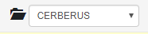 |
-
Create an environment. Example : PROD FR (see Environment)
-
Create an application. Example : Google (see Application)
-
Edit once again your application, you can now set new parameters. In tab environment, create PROD FR environment and fill http://www.google.fr in host section.
Technical settings are now finished. Please refer to the following section to implement a TestCase.
First steps
|
Note
|
Please verify with your administrator if system and application are already created. |
You will find below step to create and execute a TestCase.
-
Optionally you can created one or several Test Folder in order to host your test cases. Example : « Search Engine » (see [Create test])
-
Access to TestCase list and create a TestCase (cf [Create TestCase]). Mandatory fields : Test / Application / TestCase ID (Should already be filled with a reference).
|
Note
|
Activation criteria tab : Activate for PROD your TestCase. (default setting not active for PROD) For the example, We will run our TestCase on PROD environment |
-
Your TestCase is now created, find it in the list using filters.
-
Edit it (cf [Implement TestCase])
-
Create your first step « Open Google »
-
Add your first action : OpenURL value = www.google.com or OpenURLWithBase value = / (if URL is already defined in application settings)
-
You can add a control : VerifyTitle Title = Google
-
Save the script and click on Run button.
-
You are now on execution page. Select country / environment
-
Fill robot information. Mandatory fields : IP / port / browser.
|
Note
|
You must first run your selenium server (see Selenium) |
-
Click on the execution button.

Congratulations, you’ve just executed your first Cerberus TestCase !
 Something is incorrect/missing in this section? Feel free to submit modification.
Something is incorrect/missing in this section? Feel free to submit modification.
3. Overview
In this section, you will find general information on Cerberus. How it is organized, How the tables are Customizable…etc.
 Something is incorrect/missing in this section? Feel free to submit modification.
Something is incorrect/missing in this section? Feel free to submit modification.
Test Management
In this section, you will find information on test management in Cerberus.
 Something is incorrect/missing in this section? Feel free to submit modification.
Something is incorrect/missing in this section? Feel free to submit modification.
4. Test Folder
4.1. Test
In this section, you will find information on Test Folder in Cerberus. A Test Folder is just a way to group and classify your test case. Every test case must be attached to a unique Test Folder. Inside the same Test Folder, every test case must have a different id. 2 test cases can have the same id if they belong to 2 different Test Folder.

|
Note
|
There are 2 Test Folder that have a specific behavior and allow to automatically add before and after any steps execution. Those 2 tests are Pre Testing and Post Testing. They are identifying all test cases that will respectively be added at the beginning and at the end of the test cases. For a given test case running on an application app1, the following rules will apply : . Only test cases inside Pre Testing and Post Testing will be added if they belong to the same application app1. . Only active test cases will be added. . Only test cases that are within the From Major / From Minor and To Major / To Minor . The test cases will be executed sorted by test case id. |
4.2. Test attributes
Field |
Description |
Test |
Test name. |
Description |
Description of the test. |
Active |
Define if the test is active. When Inactive, all associated test cases will be desactivated and will be allowed to be executed. |
 Something is incorrect/missing in this section? Feel free to submit modification.
Something is incorrect/missing in this section? Feel free to submit modification.
5. Test Case
5.1. TestCase
5.1.1. TestCase List

5.1.2. Test Case attributes
Field |
Description |
Test Folder |
Test Folder name on which test case belong. |
Test case |
An ID (alphanumeric character) that identify the Test Case inside the Test Folder. |
Short Description |
Provide a brief description of the Test Case. |
Application |
The application for which the test case is defined. |
Status |
Used to implement a workflow and gives way to filter Test Case depending on its implementation status. |
Active |
Boolean that defines if the Test Case can be launched. |
Type |
define the technology of the application (Web, IOS, Android, service,…). |
Priority |
Defined the priority of the Test Case. Means importance of the feature covered by the Test Case. |
Detailed Description |
Provide more detailed information about the Test Case. |
The Activation Criterias defines condition to enable/block the Testcase to be launched in specific context (countries, environment…). This level of specification is the most important (override all the others conditions)
A Test case can be linked to multiple Labels depending on their assigned system (see labels section)
You can define Robot constrains at test case level in order to force the execution a specific test case with a specific UserAgent or ScreenSize. This is used to test some specific behavior of a website for a given UserAgent or ScreenSize. You can tune the list of UserAgent and ScreenSize proposed in autocomplete mode (on the GUI) by modifying the respective public invariant USERAGENT and SCREENSIZE.
UserAgent and ScreenSize will be defined at execution level following the rule :
TestCase |
Robot / Execution |
UserAgent Result |
UserAgent1 |
UserAgent1 |
|
UserAgent2 |
UserAgent2 |
|
user Agent unchanged |
||
UserAgent1 |
UserAgent2 |
UserAgent1 |
TestCase |
Robot / Execution |
ScreenSize Result |
1024*768 |
1024*768 |
|
640*360 |
640*360 |
|
Fullscreen |
||
1024*768 |
640*360 |
1024*768 |
5.2. Test Case Step
5.2.1. Step
-
Click on Add step to display the following window.

-
Feed a Description and click on Add for a new step.
-
Or search for a step in library then click on Add.
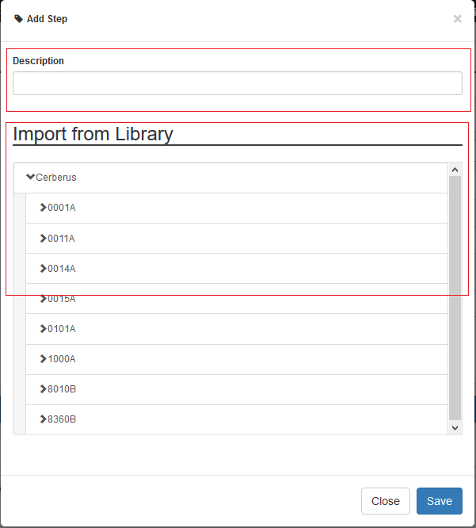
Your step is created. if you want to put it in library, just click on the book on the right side. A step in library will be available to add it in all test cases of your current system.
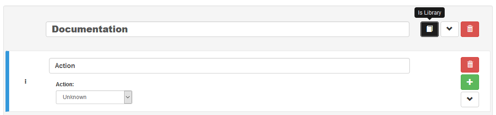
In the following screenshot you can see a use step. This step is imported from the previous library step. You are not able to modify it (all fields are grey). But you can find a link at the top to open the library if you want to modify your step. All use steps from this library will be impacted by your modification.
To modify only this use step, you have to click on the padlock icon but it will not be a use step anymore. (modification on library step will not affect it)

|
Note
|
You have the possibility to switch the position of your steps by drag and drop the 3 dots. |
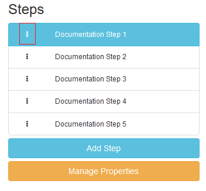 
|
Note
|
It is possible to loop over a step using the following configuration.

|
5.3. TestCase Action
5.3.1. Unknown
Unknown action. Should be used when the action is not yet known. Warning: make the execution fail.
5.3.2. click
Click on the left mouse button on an element inside the current page.
Value1 Identifier and name of the element to click in the form of : identifier=html_reference.
5.3.3. longPress
Click during a specific duration on the left mouse button on an element inside the current page.
Value1 Identifier and name of the element to click in the form of : identifier=html_reference.
Value2 Duration of the click in milliseconds.
5.3.4. mouseLeftButtonPress
Press and keep the left mouse button pressed on an element until the action 'mouseLeftButtonRelease' is executed.
Value1 Identifier and name of the element to click in the form of : identifier=html_reference.
5.3.5. mouseLeftButtonRelease
Release the mouse button on an element. Usefull with ButtonPress to perform drag & drop
Value1 Identifier and name of the element where release will be done in the form of : identifier=html_reference.
5.3.6. doubleClick
Double click on an element inside the current page.
Value1 Identifier and name of the element to click in the form of : identifier=html_reference.
5.3.7. rightClick
Right click on an element inside the current page.
Value1 Identifier and name of the element to double click in the form of : identifier=html_reference.
5.3.8. mouseOver
Mouse cursor over an element inside the current page.
Value1 Identifier and name of the element to over in the form of : identifier=html_reference.
5.3.9. focustoIframe
Set the focus to a specific frame on the current page.
Value1 Identifier and name of the frame to focus in the form of : identifier=html_reference.
5.3.10. focustoDefaultIframe
Set back the focus to the previous frame on the current page.
5.3.11. switchToWindow
Switch the focus to another window (like popup dialog).
Value1 Title or URL of the other window to switch to.
title=titleOfThisNewWindow
url=http://url_of_this_new_window
5.3.12. manageDialog
Close the browser popup alert windows either by accepting it with ok either by cancelling it with cancel
Value1 ok or cancel
5.3.13. manageDialogKeypress
Keypress inside the browser popup alert windows.
Value1 List of characters to type. You can use several special keys into the same action
texttoenter[ENTER]
user[TAB]password[ENTER]
|
Note
|
Supported keys are : [BACK_SPACE], [TAB], [RETURN], [ENTER], [SHIFT], [LEFT_SHIFT], [CONTROL], [LEFT_CONTROL], [ALT], [LEFT_ALT], [ESCAPE], [SPACE], [PAGE_UP], [PAGE_DOWN], [LEFT], [ARROW_LEFT], [UP], [ARROW_UP], [RIGHT], [ARROW_RIGHT], [DOWN], [ARROW_DOWN], [DELETE], [SEMICOLON], [EQUALS], [NUMPAD0], [NUMPAD1], [NUMPAD2], [NUMPAD3], [NUMPAD4], [NUMPAD5], [NUMPAD6], [NUMPAD7], [NUMPAD8], [NUMPAD9], [MULTIPLY], [ADD], [SEPARATOR], [SUBTRACT], [DECIMAL], [DIVIDE], [F1], [F2], [F3], [F4], [F5], [F6], [F7], [F8], [F9], [F10], [F11], [F12] |
5.3.14. OpenUrlWithBase
OpenUrl action using the base defined in the application / environment section.
Value1 Relative URL to open.
/cerberustesting/page.html
5.3.15. OpenUrlLogin
OpenUrl action using the login page defined at application / environment level.
5.3.16. OpenUrl
Open a specified full url.
Value1 Complete URL to open.
5.3.17. refreshCurrentPage
Reload the current page.
5.3.18. executeJS
GUI |
SRV |
APK |
IPA |
FAT |
BAT |
Execute a JS script (no output can be retrieved).
Value1 Javascript to execute.
var newOption = new Option('%property.ApplicationName%', '%property.ApplicationName%', true, true);
$('#application').append(newOption).trigger('change');
5.3.19. executeCommand
GUI |
SRV |
APK |
IPA |
FAT |
BAT |
Execute a Command on the robot side. You can follow the Appium instructions here.
Value1 Command to execute. Ex : mobile:deepLink
Value2 Arguments of the command. Ex : {url: "https://www.site.com/", package: "com.site.SomeAndroidPackage"}
5.3.20. executeCerberusCommand
GUI |
SRV |
APK |
IPA |
FAT |
BAT |
Execute a Command from the Cerberus Server side. The command will be executed using the user defined in the parameter cerberus_executeCerberusCommand_user, password defined in cerberus_executeCerberusCommand_password and script from the path cerberus_executeCerberusCommand_path
Value1 Command to execute.
5.3.21. openApp
GUI |
SRV |
APK |
IPA |
FAT |
BAT |
Open an Application. For GUI and FAT, this action require the Cerberus Sikuli extention.
Value1 Application to Open. BundleId for IPA (activateApp() method is used), if empty, launchApp() method is used). App Package for APK ('am start' command is used).
Value2 App Activity for APK.
5.3.22. closeApp
GUI |
SRV |
APK |
IPA |
FAT |
BAT |
Close an application.
Value1 Application to Open.
5.3.23. dragAndDrop
GUI |
SRV |
APK |
IPA |
FAT |
BAT |
Will Drag from an Element to another Element.
Value1 Identifier and name of the element to drag in the form of : identifier=html_reference.
Value2 Identifier and name of the element where to drop in the form of : identifier=html_reference..
5.3.24. select
GUI |
SRV |
APK |
IPA |
FAT |
BAT |
Select an option in a <select> Element. this 'text' must be defined : <option value="text">. For APK and IPA, action only works in a web mode.
Value1 Identifier and name of the element of the select in the form of : identifier=html_reference.
Value2 Element to select.
<option value="text">
5.3.25. keypress
GUI |
SRV |
APK |
IPA |
FAT |
BAT |
will allow you to press any key in the current web page.
Value1 : Identifier and name of the element where the key is pressed in the form of : identifier=html_reference.
Value2 : Keycode of the key to press.
ENTER
Key.ENTER
The keycodes (see. keypress action) also changes depending on the application type (GUI, IPA, APK or FAT). The syntaxes are:
-
for GUI :
KEYNAME
Following Selenium KEYNAME can be used : NULL, CANCEL, HELP, BACK_SPACE, TAB, CLEAR, RETURN, ENTER, SHIFT, LEFT_SHIFT, CONTROL, LEFT_CONTROL, ALT, LEFT_ALT, PAUSE, ESCAPE, SPACE, PAGE_UP, PAGE_DOWN, END, HOME, LEFT, ARROW_LEFT, UP, ARROW_UP, RIGHT, ARROW_RIGHT, DOWN, ARROW_DOWN, INSERT, DELETE, SEMICOLON, EQUALS, NUMPAD0, NUMPAD1, NUMPAD2, NUMPAD3, NUMPAD4, NUMPAD5, NUMPAD6, NUMPAD7, NUMPAD8, NUMPAD9, MULTIPLY, ADD, SEPARATOR, SUBTRACT, DECIMAL, DIVIDE, F1, F2, F3, F4, F5, F6, F7, F8, F9, F10, F11, F12, META, COMMAND, ZENKAKU_HANKAKU
-
for APK :
KEYNAME
Following Appium Android KEYNAME can be used : UNKNOWN, SOFT_LEFT, SOFT_RIGHT, HOME, BACK, CALL, ENDCALL, DIGIT_0, DIGIT_1, DIGIT_2, DIGIT_3, DIGIT_4, DIGIT_5, DIGIT_6, DIGIT_7, DIGIT_8, DIGIT_9, STAR, POUND, DPAD_UP, DPAD_DOWN, DPAD_LEFT, DPAD_RIGHT, DPAD_CENTER, VOLUME_UP, VOLUME_DOWN, POWER, CAMERA, CLEAR, A, B, C, D, E, F, G, H, I, J, K, L, M, N, O, P, Q, R, S, T, U, V, W, X, Y, Z, COMMA, PERIOD, ALT_LEFT, ALT_RIGHT, SHIFT_LEFT, SHIFT_RIGHT, TAB, SPACE, SYM, EXPLORER, ENVELOPE, ENTER, DEL, GRAVE, MINUS, EQUALS, LEFT_BRACKET, RIGHT_BRACKET, BACKSLASH, SEMICOLON, APOSTROPHE, SLASH, AT, NUM, HEADSETHOOK, FOCUS, PLUS, MENU, NOTIFICATION, SEARCH, MEDIA_PLAY_PAUSE, MEDIA_STOP, MEDIA_NEXT, MEDIA_PREVIOUS, MEDIA_REWIND, MEDIA_FAST_FORWARD, MUTE, PAGE_UP, PAGE_DOWN, PICTSYMBOLS, SWITCH_CHARSET, BUTTON_A, BUTTON_B, BUTTON_C, BUTTON_X, BUTTON_Y, BUTTON_Z, BUTTON_L1, BUTTON_R1, BUTTON_L2, BUTTON_R2, BUTTON_THUMBL, BUTTON_THUMBR, BUTTON_START, BUTTON_SELECT, BUTTON_MODE, ESCAPE, FORWARD_DEL, CTRL_LEFT, CTRL_RIGHT, CAPS_LOCK, SCROLL_LOCK, META_LEFT, META_RIGHT, FUNCTION, SYSRQ, BREAK, MOVE_HOME, MOVE_END, INSERT, FORWARD, MEDIA_PLAY, MEDIA_PAUSE, MEDIA_CLOSE, MEDIA_EJECT, MEDIA_RECORD, F1, F2, F3, F4, F5, F6, F7, F8, F9, F10, F11, F12, NUM_LOCK, NUMPAD_0, NUMPAD_1, NUMPAD_2, NUMPAD_3, NUMPAD_4, NUMPAD_5, NUMPAD_6, NUMPAD_7, NUMPAD_8, NUMPAD_9, NUMPAD_DIVIDE, NUMPAD_MULTIPLY, NUMPAD_SUBTRACT, NUMPAD_ADD, NUMPAD_DOT, NUMPAD_COMMA, NUMPAD_ENTER, NUMPAD_EQUALS, NUMPAD_LEFT_PAREN, NUMPAD_RIGHT_PAREN, VOLUME_MUTE, INFO, CHANNEL_UP, CHANNEL_DOWN, KEYCODE_ZOOM_IN, KEYCODE_ZOOM_OUT, TV, WINDOW, GUIDE, DVR, BOOKMARK, CAPTIONS, SETTINGS, TV_POWER, TV_INPUT, STB_POWER, STB_INPUT, AVR_POWER, AVR_INPUT, PROG_RED, PROG_GREEN, PROG_YELLOW, PROG_BLUE, APP_SWITCH, BUTTON_1, BUTTON_2, BUTTON_3, BUTTON_4, BUTTON_5, BUTTON_6, BUTTON_7, BUTTON_8, BUTTON_9, BUTTON_10, BUTTON_11, BUTTON_12, BUTTON_13, BUTTON_14, BUTTON_15, BUTTON_16, LANGUAGE_SWITCH, MANNER_MODE, MODE_3D, CONTACTS, CALENDAR, MUSIC, CALCULATOR, ZENKAKU_HANKAKU, EISU, MUHENKAN, HENKAN, KATAKANA_HIRAGANA, YEN, RO, KANA, ASSIST, BRIGHTNESS_DOWN, BRIGHTNESS_UP, MEDIA_AUDIO_TRACK, SLEEP, WAKEUP, PAIRING, _MEDIA_TOP_MENU, KEY_11, KEY_12, LAST_CHANNEL, TV_DATA_SERVICE, VOICE_ASSIST, TV_RADIO_SERVICE, TV_TELETEXT, TV_NUMBER_ENTRY, TV_TERRESTRIAL_ANALOG, TV_TERRESTRIAL_DIGITAL, TV_SATELLITE, TV_SATELLITE_BS, TV_SATELLITE_CS, TV_SATELLITE_SERVICE, TV_NETWORK, TV_ANTENNA_CABLE, TV_INPUT_HDMI_1, TV_INPUT_HDMI_2, TV_INPUT_HDMI_3, TV_INPUT_HDMI_4, TV_INPUT_COMPOSITE_1, TV_INPUT_COMPOSITE_2, TV_INPUT_COMPONENT_1, TV_INPUT_COMPONENT_2, TV_INPUT_VGA_1, TV_AUDIO_DESCRIPTION, TV_AUDIO_DESCRIPTION_MIX_UP, TV_AUDIO_DESCRIPTION_MIX_DOWN, TV_ZOOM_MODE, TV_CONTENTS_MENU, _TV_MEDIA_CONTEXT_MENU, TV_TIMER_PROGRAMMING, HELP, NAVIGATE_PREVIOUS, NAVIGATE_NEXT, NAVIGATE_IN, NAVIGATE_OUT, STEM_PRIMARY, STEM_1, STEM_2, STEM_3, DPAD_UP_LEFT, DPAD_DOWN_LEFT, DPAD_UP_RIGHT, DPAD_DOWN_RIGHT, MEDIA_SKIP_FORWARD, MEDIA_SKIP_BACKWARD, MEDIA_STEP_FORWARD, MEDIA_STEP_BACKWARD, SOFT_SLEEP, CUT, COPY, PASTE
-
for IPA :
KEYNAME
Following Appium IOS KEYNAME can be used : RETURN, ENTER, SEARCH, BACKSPACE
-
for FAT :
Key.KEYNAME
Following KEYNAME values can be used : ENTER, TAB, ESC, BACKSPACE, DELETE, INSERT, SPACE, F1, F2, F3, F4, F5, F6, F7, F8, F9, F10, F11, F12, F13, F14, F15, HOME, END, LEFT, RIGHT, DOWN, UP, PAGE_DOWN, PAGE_UP, PRINTSCREEN, PAUSE, CAPS_LOCK, SCROLL_LOCK, NUM_LOCK, NUM0, NUM1, NUM2, NUM3, NUM4, NUM5, NUM6, NUM7, NUM8, NUM9, SEPARATOR, ADD, MINUS, MULTIPLY, DIVIDE, ALT, CMD, CTRL, META, SHIFT, WIN
5.3.26. type
GUI |
SRV |
APK |
IPA |
FAT |
BAT |
Type a data in an Element.
Value1 : Identifier and name of the element where the data is entered in the form of : identifier=html_reference.
Value2 : data to enter in the field.
5.3.27. clearField
GUI |
SRV |
APK |
IPA |
FAT |
BAT |
Clear (Empty) an Element.
Value1 : Identifier and name of the element to be cleared in the form of : identifier=html_reference.
5.3.28. hidekeyboard
GUI |
SRV |
APK |
IPA |
FAT |
BAT |
Hide the currently visible keyboard
5.3.29. swipe
GUI |
SRV |
APK |
IPA |
FAT |
BAT |
The action simulates a user pressing down on the screen, sliding to another position, and removing their finger from the screen. Swipe action can be used neither with unique parameter UP, DOWN, LEFT or RIGHT or with combination of parameter CUSTOM and x1;y1;x2;y2, which are coordinates of origin point (x1;y1) and relatives coordinates of destination point (x2;y2)
Value1 : UP, DOWN, LEFT, RIGHT or CUSTOM.
Value2 : x1;y1;x2;y2 (only used if Value1 is CUSTOM)
Value1 UP
Value2
will swipe from the 2/3 to the 1/3 of the screen.
Value1 CUSTOM
Value2 100;100;0;100
Will swipe from the point (100;100) to the point (100;200)
5.3.30. scrollTo
GUI |
SRV |
APK |
IPA |
FAT |
BAT |
Scroll to either an element or a text.
Value1 : Identifier and name of the element where the scroll will move the screen to in the form of : identifier=html_reference.
Value2 : text in the screen where the scroll will move.
|
Note
|
Use either Value1 or Value2. If both are feed, the Value2 scroll will be used first. |
5.3.31. installApp
GUI |
SRV |
APK |
IPA |
FAT |
BAT |
Install an application on the mobile.
Value1 : Path to the application to install.
/root/toto.apk
5.3.32. removeApp
GUI |
SRV |
APK |
IPA |
FAT |
BAT |
Remove an application from the mobile.
Value1 : Application package name to remove.
com.cerberus.appmobile
5.3.33. wait
GUI |
SRV |
APK |
IPA |
FAT |
BAT |
Wait for a certain amount of time or for an element to be present on a page.
Value1 : Either an integer that represent a duration in ms, either an Element that we will wait to exist in the form of : identifier=html_reference.
10000
Will wait 10 seconds
id=userName
Will wait that element with id equal to userName is loaded on the current screen.
5.3.34. waitVanish
GUI |
SRV |
APK |
IPA |
FAT |
BAT |
Wait that an element is removed from the page.
Value1 : Element that we will wait to be removed from the screen in the form of : identifier=html_reference.
id=userName
Will wait that Element with id equal to userName is removed from the current screen.
5.3.35. waitNetworkTrafficIdle
GUI |
SRV |
APK |
IPA |
FAT |
BAT |
Wait that network traffic idle. Cerberus will wait until requests are no longer performed. That can be used in order to secure that all page components are fully loaded and does not miss some important resource hits. In order to do so, Cerberus will check periodically the number of hits generated from the application since the beginning of the test case. When the number of hits stops to grow during that period, Cerberus stop waiting and continue the test case.
Parameter 'cerberus_networkstatsave_idleperiod_ms' can be used to change the period in millisecond and 'cerberus_networkstatsave_idlemaxloop_nb' can be used in order to limit those checks after a maximum of iteration.
|
Note
|
This action is only possible when Robot has the Cerberus executor activated and fully working. It also require at least version 1.1 of the executor. |
5.3.36. callService
GUI |
SRV |
APK |
IPA |
FAT |
BAT |
Call a service (REST, FTP, KAFKA,…) defined on the Service Library and provide the output within the execution.
Value1 : Name of the service to call.
Value2 : Nb of Event until the action finish. It is only used if the Service is a KAFKA service with a SEARCH method. It correspond to the nb of event the action will wait until it resume to the following controls or actions.
Value3 : Time in second until the action finish.It is only used if the Service is a KAFKA service with a SEARCH method. It correspond to maximum time in second the action will wait until it resume to the following controls or actions.
5.3.37. executeSqlUpdate
GUI |
SRV |
APK |
IPA |
FAT |
BAT |
Will allow you to execute SQL update (insert,delete,update).
Value1 : Name of the database where the SQL will be executed. Database needs to be created into the invariant PROPERTYDATABASE and configured on the corresponding environment.
Value2 : SQL to be executed.
5.3.38. executeSqlStoredProcedure
GUI |
SRV |
APK |
IPA |
FAT |
BAT |
Will allow you to execute SQL stored procedure.
Value1 : Name of the database where the SQL will be executed. Database needs to be created into the invariant PROPERTYDATABASE and configured on the corresponding environment.
Value2 : SQL to be executed.
5.3.39. calculateProperty
GUI |
SRV |
APK |
IPA |
FAT |
BAT |
Will allow you to calculate a Property defined in the property section of the test case and optionally update the content with another property. That action should only be used if you need to force a calculation at a precise timing or if you want to recalculate it with the latest value. A property calculation is automatically triggered when using a property without being forced to use that action.
Value1 : Name of the property to calculate. If the property is already calculated, it will be forced to be calculated again.
Value2 : [Optional] Name of a second property that will affect the property in Value1.
5.3.40. setNetworkTrafficContent
GUI |
SRV |
APK |
IPA |
FAT |
BAT |
Retrieve the network traffic from Cerberus Executor (when activated at robot level) and calculate a json message that can be used for direct controls on all attached controls. If Robot Executor is not activated, Action will end in NE Status and all attached controls ignored. Once all controls of that action are finished, current content are set back to normal value (could be an html or app page or another service).
Value1 : URL to filter. Network requests will be filtered based on that value. Any url that contain the value1 will be included in the network traffic.
Value2 : [Optional] Flag in order to include the response content of every requests. For speed and performance reason, Cerberus by default will not retrieve the content of every requests. If you want to get them in order to perform some controls on them, you can use that flag.
|
Note
|
This action is only possible when Robot has the Cerberus executor activated and fully working. It also require at least version 1.1 of the executor. |
5.3.41. setServiceCallContent
GUI |
SRV |
APK |
IPA |
FAT |
BAT |
Force current content of the test case on the last service call in a JSON format. That JSON will allow controls on the structure of the last call for both Request and Response including information such as http header, http protocol version, or return code. Any control attached to that action will take json path as element syntax for direct controls. If no calls were performed before that action, action will end in NE Status and all attached controls ignored. Once all controls of that action are finished, current content are set back to normal value (could be an html or app page or another service).
5.3.42. doNothing
GUI |
SRV |
APK |
IPA |
FAT |
BAT |
Just perform no action. No action will be executed and engine will go to the next action or control
5.3.43. removeDifference
DEPRECATED Action that should no longuer used.
5.4. TestCase Action Global Informations
5.4.1. Global Identifiers Definition
Syntax in order to identify a field or element inside a page has the form :
identifier=html_reference
identifier can take the various values :
-
id=
id of the field will be used.
-
name=
-
class=
-
css=
-
xpath=
You can specify an xpath value. Additional documentation on xpath syntax can be found here. Xpath can be tested live on Web pages from Chrome Developer extention (accessible via F12).
Via Element tab, you just have to hit CTRL+F in order to find inside the DOM.

In the search field, typing the xpath will point you to the element.

XPath can also be tested from the console tab.

Just type
$x("//div");
And it will report the Element found. [] is returned in case no element are found.

-
link=
-
data-cerberus=
-
coord=
-
picture=
id=html_reference
xpath=//*[@id='html_reference']
picture=%object.NameOfYourObject.pictureurl%
5.4.2. FAT client Applications
In order to perform any action/control (e.g. 'click', 'verifyElementPresent'), Application Object must be used to reference picture.
Keep in mind that for click action, it will be performed in the center of the picture:

5.4.3. Network Traffic JSON format
Standard JSON format can by found in w3c repo.
In addition to standard HAR structure, Cerberus will add a stat json entry in top level containing some agregated data in order to make controls easier. That stat section will be feed by checking every hit performed by the tested application. Every hit will enrish the total section (excepted ingnored entries that will feed ignore section). They will also feed one of the following section : either internal, either thirdparty (each will then be spread per thirdparty ThirdPartyN) or unknown if the hit cannot match one of the application domain or one of the Third Party domain.
"stat": {
"total":{
"hosts": [
"www.laredoute.fr",
"fonts.googleapis.com",
"laredoutemobile.commander1.com",
"privacy.trustcommander.net"
],
"size":{
"sum": 2286467,
"max": 125109,
"urlMax": "https://www.laredoute.com/mar/toto.jpg"
},
"requests":{
"nb": 117,
"nb100": 0,
"nb101": 0,
"nb1xx": 0,
"nb200": 111,
"nb201": 0,
"nb2xx": 111,
"nb300": 0,
"nb301": 2,
"nb302": 2,
"nb307": 0,
"nb3xx": 4,
"nb400": 0,
"nb403": 0,
"nb404": 1,
"nb4xx": 1,
"nb500": 0,
"nb5xx": 0,
"nbError": 1,
"urlError": [ "https://www.lrd.co/mar/to.jpg"]
},
"time":{
"totalDuration": 18062,
"max": 4512,
"urlMax": "https://latem.commander1.com/dc3/?chn=D",
"avg": 455,
"sum": 53249,
"firstURL": "http://www.laredoute.fr/",
"firstStart": "2020-02-25T20:15:16.048Z",
"firstStartR": 0,
"firstEnd": "2020-02-25T20:15:16.95Z",
"firstEndR": 47,
"firstDuration": 47,
"lastURL": "https://p.trust.net/p-c/?id=1&site=12",
"lastStart": "2020-02-25T20:15:29.655Z",
"lastStartR": 13607,
"lastEnd": "2020-02-25T20:15:34.110Z",
"lastEndR": 18062,
"lastDuration": 4455
},
"type":{
"css":{
"requests": 2,
"sizeSum": 125109,
"sizeMax": 2286467,
"urlMax": "https://www.laredoute.com/mar/12.css"
},
"img":{...},
"other":{...},
"js":{...},
"html":{...},
"content":{...},
"media":{...},
"font":{...}
}
},
"internal":{...},
"nbThirdParty":2,
"thirdparty":{
"ThirdParty1":{...},
"ThirdParty2":{...}
},
"ignore":{...},
"unknown":{...},
"requests": [
{
"size": 79565,
"provider": "internal",
"domain": "www.domain.com",
"httpStatus": 200,
"start": 0,
"time": 325,
"contentType": "html",
"url": "https://www.domain.com/"
},
{...}
]
}
Cerberus will determine if a hit must be ignored (and appear in ignore section) by feeding parameter cerberus_webperf_ignoredomainlist with coma separated domains to ignore.
Cerberus will get and guess the ThirdPartyN from thirdparty section from a json file that can be retrieve from the following repo.
The file should be available from Cerberus from the location provided by the parameter cerberus_webperf_thirdpartyfilepath.
If parameter is empty or file not found by Cerberus, no third party will be guess.
You can also add extra third party from the Cerberus GUI by adding a public invariant WEBPERFTHIRDPARTY with first attribute with the list of domain with coma separated format.
internal section is populated from the URL domain list defined on the corresponding application / environment. all hosts should be defined on the domain field with coma separated format. In case the domain field is empty, Cerberus will guess it from the application URL.
Any host URL that does not match either the cerberus_webperf_ignoredomainlist parameter, the ThirdParty definition file from parameter cerberus_webperf_thirdpartyfilepath, the WEBPERFTHIRDPARTY public invariant or list of application domain will appear in the unknown section.
At the end of the execution, Cerberus will automatically execute 'waitNetworkTrafficIdle' action in order to secure that requests are no longer performed. This is used in order to secure that the collected stats are complete and does not miss some important hits.
5.5. Test Case Control
Control |
Description |
Example |
Unknown |
Default control when creating a new control |
|
getPageSource |
Force the page source to be retrieved and stored to be checked for detailed analysis. |
|
takeScreenshot |
Force to take a screenshot. Image can be automatically crop when taking the screenshot allowing to automatize clean application or web site screenshot (without Operating system header or footer elements). |
|
verifyElementClickable |
OK if Element is clickable. |
|
verifyElementDifferent |
TBD |
|
verifyElementEquals |
TBD |
|
verifyElementinElement |
OK if Sub Element is inside Master Element. That can be used to check if an option is available inside a select box. |
|
verifyElementNotClickable |
OK if Element is not clickable. |
|
verifyElementNotPresent |
OK if Element is not found (from the page source code) on the current page. in case of a Web application, that control will wait for the timeout until it confirm that element is not present on page. |
|
verifyElementNotVisible |
OK if Element is found but not visible (according to rendering) on the current page. |
|
verifyElementNumericDifferent |
OK if Element is found on the current page and its content has a numeric value that is different from Numeric Value indicated. |
|
verifyElementNumericEqual |
OK if Element is found on the current page and its content has a numeric value that is equal to Numeric Value indicated. |
|
verifyElementNumericGreater |
OK if Element is found on the current page and its content has a numeric value that is greater than the Numeric Value indicated. |
|
verifyElementNumericGreaterOrEqual |
OK if Element is found on the current page and its content has a numeric value that is greater or equal to Numeric Value indicated. |
|
verifyElementNumericMinor |
OK if Element is found on the current page and its content has a numeric value that is lower than the Numeric Value indicated. |
|
verifyElementNumericMinorOrEqual |
OK if Element is found on the current page and its content has a numeric value that is lower or equal than Numeric Value indicated. |
|
verifyElementPresent |
OK if Element is found on the current page. |
|
verifyElementTextDifferent |
OK if the text found in Element is not equal to the Text indicated |
Element : //StatusCode Text : KO |
verifyElementTextEqual |
OK if the text found in Element is equal to the Text indicated |
Element : //StatusCode Text : OK |
VerifyElementTextMatchRegex |
OK if a Regex match the content of an Element. |
|
verifyElementVisible |
OK if Element is visible on the current page. |
|
verifyNumericDifferent |
OK if the Integer1 is different from the Integer2. |
|
verifyNumericEquals |
OK if the Integer1 is equal to the Integer2. |
|
verifyNumericGreater |
OK if the Integer1 is greater than the Integer2. |
|
verifyNumericGreaterOrEqual |
OK if the Integer1 is greater than the Integer2. |
|
verifyNumericMinor |
OK if the Integer1 is lower than the Integer2. |
|
verifyNumericMinorOrEqual |
OK if the Integer1 is lower than the Integer2. |
|
verifyStringContains |
OK if String1 contains the String2. |
|
verifyStringDifferent |
OK if String1 is different from String2. |
|
verifyStringEqual |
OK if String1 is equal to String2. |
|
verifyStringGreater |
OK if String1 is greater than String2 (using alphabetical order) |
String1 : ZZZ String2 : AAA |
verifyStringMinor |
OK if the String1 is minor than to the String2 (using alphabetical order) |
String1 : AAA String2 : ZZZ |
verifyStringNotContains |
OK if String1 does not contains the String2. |
|
verifyTextInDialog |
OK if Text is inside the browser dialog box |
|
verifyTextInPage |
TBD |
|
verifyTextNotInPage |
TBD |
|
verifyTitle |
TBD |
|
verifyUrl |
OK if the URL of the current page equal to the URL indicated . |
|
verifyXmlTreeStructure |
TBD |
5.6. Test Case Property
When clicking on Tab 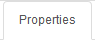, the Property menu will appear. From there you can manage your TestCase properties or see your Inherited Properties - coming from the step libraries of your use steps.

Properties are the key element of your Test Case to manage different variables in the same scenario. A property is identified by its name and the country for which it’s defined (e.g. you cannot have two properties defined for the same country with the same name).
Properties can be called by their name using the following syntaxes:
-
%property.property_name%: the execution will stop if any problem in the property calculation -
%property_name_here%: the execution will not stop if any problem in the property calculation
When handling Datalib, the syntaxes to call the subdata are :
-
%property.property_name.sub_data_name%or%property_name.sub_data_name% -
%property.property_name(sub_data_name)%or%property_name(sub_data_name)%
Properties can be called in action or control values field or in another property.
Field |
Description |
Property |
Name of the property. |
Description |
Description of the property. |
Countries |
Countries for which the property will be calculated (environment parameter). |
Type |
The way the property is going to be calculated. |
Value |
Value of the property. |
DB |
DataBase in which the property will be calculated. Used by "executeSql" Property type. |
Length |
When calculating a list of values, defines the number of rows the property will return. |
Row Limit |
When returning a list of values, limits the number of rows the property will consider for random purposes. |
Nature |
Defines the unique value that will be used in the execution. By default, STATIC has no rules defined : it will take the first result it finds. RANDOM will pick a random value if several rows are available. RANDOMNEW will pick a random value that was never selected before in any older execution. NOTINUSE will pick a value that is not currently used by a running execution. |
Nb of retry |
When the property fail to retrieve any data, it can retry several times to get the data. That data define the nb of retry after which it will stop trying and report a NA status. |
Retry Period |
Defines the period in millisecond between every retry. |
Cache Expire |
Defines the amount of time in second during which the property can be kept in cache. 0 value disable the cache mecanisme. |
Rank |
If 1 the property is considered as a primary property and will always be displayed on execution detail. From 2 to higher value, the property will be considered as secondary and will be hidden by default from execution report. |
5.6.1. Property Types
Field |
Description |
Example |
text |
assign the property an alphanumeric value. Can invoke other properties |
|
getFromDataLib |
query the corresponding datalib (identified by its name) |
|
getFromSQL |
run a specific query an get the first, and only the first, result. The DB must be specified |
|
getFromHtml |
||
getFromHtmlVisible |
||
getElementPosition |
||
getFromJS |
Execute the specified JavaScript script without getting any output |
|
getAttributeFromHtml |
||
getFromCookie |
||
getFromXml |
Xpath to get a certain element from an XML service call |
|
getDifferencesFromXml |
||
getRawFromXml |
Xpath to get a certain element from an XML service call |
|
getFromJson |
JSON path to get a certain element from a service call |
|
getFromCommand |
||
getFromGroovy |
Execute the specified Groovy script and get the last defined variable |
|
SQL queries management:
-
queries can be stored inside the test case and launched using getFromSQL. Only one value of the first row can be retrieved.
-
queries can be stored inside a Datalib, according to its DB. Several values of the first row can be retrieved.
We recommend to use the Datalib since it allow SQL to be dynamically reused from one test case to another.
5.7. Test Case Variables
You can use variables in many area of Cerberus. Those variable are used in order to perform some actions of controls in a dynamic way. 3 types of variables can be created :
-
Variables defined from properties inside Test Cases.
-
Variables defined from application object.
-
System Variables
Properties and Application Object are defined by the users while system variable are provided by Cerberus.
The global syntax of a variable is : %[property|object|system].nameOfTheVariable%
This is the list of fields in Cerberus where you can use those variables.
-
All Test Cases, Steps, Actions and Control descriptions.
-
Condition Value1 and Value2 at Test Case level.
-
Condition Value1 and Value2 at Step Test Case level.
-
Condition Value1 and Value2 at Action Test Case level.
-
Condition Value1 and Value2 at Control Test Case level.
-
Test Case Action Value 1, Value 2 and Value 3.
-
Test Case Control Value 1, Value 2 and Value 3.
-
Test Case Properties Value 1, Value 2 and Value 3.
-
Path, Envelope and Method at Test Data Library (SOAP) level.
-
SQL Script at Test Data Library (SQL) level
-
Column, Parsing Answer and Column Position at Test Data Library Subdata definition level
-
Path, Request, Operation and Attachment URL at Service level.
-
Request detail (all keys and values) and Header (all keys and values) at Service level.
When a variable is detected in one of those field, Cerberus will replace it by the value during the execution.
-
If the variable is an object, the value (that never change) is just replaced.
-
If the variable is a system variable, the value is calculated and replaced at the same time (for ex : time defined by %system.TODAY-doy% will be the day and time of the replacement).
-
If the variable is a property, it gets automatically calculated at the time of the replacement. If it was already calculated before, the same value (already calculated) is replaced. NOTE: In order to force the calculation of a property at a certain timing, calculateProperty Action can be inserted just before the action is used in a field.
Variables can be defined in a recursive way. That means that the following syntax :
%property.%system.country%% will be first replaced by
%property.FR% and then by FR property value (if it exist).
Please note also that, if at the end of the decode operation, there are still references to %property.???% or %system.???% or %object.%%% in the field, the corresponding test case will report an error and generate an FA status.
5.7.1. Property Variables
Property variable allow to have multi row content. As a consequence the full syntax will look like this :
%property.NameOfTheVariable.rowNb.SubData%
If rowNb is not defined, the 1st row will be used. As a consequence, the syntax %property.rowNb.nameOfTheVariable% is the same as %property.1.nameOfTheVariable%
If SubData is not defined, the key value subdata will be used.
5.7.2. Object Variables
-
%object.myobject.value% : Get the application object myobject’s value
-
%object.myobject.picturepath% : Get the application object myobject’s picture path
-
%object.myobject.pictureurl% : Get the application object myobject’s picure url
5.7.3. System Variables
Value |
Description |
%system.SYSTEM% |
System value |
%system.APPLI% |
Application name |
%system.BROWSER% |
Browser name of the current execution. |
%system.ROBOT% |
Robot name of the current execution. |
%system.ROBOTDECLI% |
Robot declination name of the current execution. |
%system.ROBOTHOST% |
current robot host. |
%system.SCREENSIZE% |
Robot screensize of the current execution. |
%system.APP_DOMAIN% |
Domain of the Application (defined at application level) |
%system.APP_HOST% |
Host of the tested Application |
%system.APP_CONTEXTROOT% |
Context Root of the tested Application |
%system.EXEURL% |
Full Url of the tested Application |
%system.APP_VAR1% |
VAR1 of the application on the environment. |
%system.APP_VAR2% |
VAR2 of the application on the environment. |
%system.APP_VAR3% |
VAR3 of the application on the environment. |
%system.APP_VAR4% |
VAR4 of the application on the environment. |
%system.ENV% |
Environment value |
%system.ENVGP% |
Environment group code |
%system.COUNTRY% |
Country code |
%system.COUNTRYGP1% |
Country group1 value |
%system.COUNTRYGP2% |
Country group2 value |
%system.COUNTRYGP3% |
Country group3 value |
%system.COUNTRYGP4% |
Country group4 value |
%system.COUNTRYGP5% |
Country group5 value |
%system.COUNTRYGP6% |
Country group6 value |
%system.COUNTRYGP7% |
Country group7 value |
%system.COUNTRYGP8% |
Country group8 value |
%system.COUNTRYGP9% |
Country group9 value |
%system.TEST% |
Test. |
%system.TESTCASE% |
TestCase |
%system.TESTCASEDESCRIPTION% |
TestCaseDescription |
%system.SSIP% |
Selenium server IP |
%system.SSPORT% |
Selenium server port |
%system.TAG% |
Execution tag |
%system.EXECUTIONID% |
Execution ID |
%system.EXESTART% |
Start date and time of the execution with format : 2016-12-31 21:24:53.008. |
%system.EXESTORAGEURL% |
Path where media are stored (based from the exeid). |
%system.EXEELAPSEDMS% |
Elapsed time in ms since the beginning of the execution (can be used to perform timing controls). |
%system.CURRENTSTEP_INDEX% |
Index number of the current step execution. Can be used when looping over a step. |
%system.CURRENTSTEP_STARTISO% |
ISO Timestamp of the beginning of the step execution. |
%system.CURRENTSTEP_ELAPSEDMS% |
Elapsed time in ms since the beginning of the current step execution (can be used to perform timing controls). |
%system.STEP.n.RETURNCODE% |
Return Code of the step n. n being the execution sequence of the step (sort). |
%system.LASTSERVICE_HTTPCODE% |
Http return code of the last service called. |
%system.TODAY-yyyy% |
Year of today |
%system.TODAY-MM% |
Month of today |
%system.TODAY-dd% |
Day of today |
%system.TODAY-doy% |
Day of today from the beginning of the year |
%system.TODAY-HH% |
Hour of today |
%system.TODAY-mm% |
Minute of today |
%system.TODAY-ss% |
Second of today |
%system.YESTERDAY-yyyy% |
Year of yesterday |
%system.YESTERDAY-MM% |
Month of yesterday |
%system.YESTERDAY-dd% |
Day of yesterday |
%system.YESTERDAY-doy% |
Day of yesterday from the beginning of the year |
%system.YESTERDAY-HH% |
Hour of yesterday |
%system.YESTERDAY-mm% |
Minute of yesterday |
%system.YESTERDAY-ss% |
Second of yesterday |
%system.TOMORROW-yyyy% |
Year of tomorrow |
%system.TOMORROW-MM% |
Month of tomorrw |
%system.TOMORROW-dd% |
Day of tomorrw |
%system.TOMORROW-doy% |
Day of tomorrw from the beginning of the year |
%system.ELAPSED-EXESTART% |
Number of milisecond since the start of the execution. |
%system.ELAPSED-STEPSTART% |
Number of milisecond since the start of the execution of the current step. |
5.7.4. Tricks
You will find below some tricks which help you to implement specific test cases.
|
Note
|
It is possible to create a random property with a number of digit defined. You have to feed the property fields like the screenshot below. This property will be different for each execution. Example: 884592, 004795

|
 Something is incorrect/missing in this section? Feel free to submit modification.
Something is incorrect/missing in this section? Feel free to submit modification.
6. Label
6.1. Label
In this section, you will find the bla bla

6.2. Label attributes
Field |
Description |
System |
System on which the label will be available. |
Label |
Name of the label. |
Color |
Color in #hex format. |
Parent Label ID |
Allow to link the label to another one in order to group them and build a label hierarchy. |
Description |
This is a short description of the label. |
 Something is incorrect/missing in this section? Feel free to submit modification.
Something is incorrect/missing in this section? Feel free to submit modification.
7. TestCase execution
7.1. Introduction
The run options are accessible using the menu Run > Run Test Case

The different sections let the user select the test case(s) to launch and choose its execution parameters.
-
Selection type
-
Environment & Country
-
Robot settings
-
Execution settings
7.2. Selection Type

Manual selection let the user select one or several test cases using the filters.
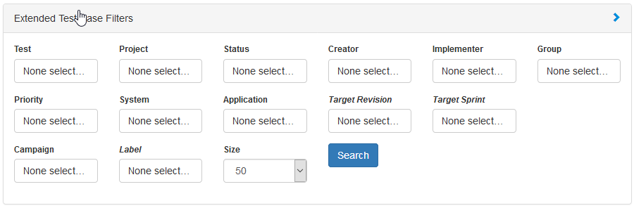
Campaign selection let the user select a campaign from a dropdown menu. Clicking 'load' button display the selected test cases in the section below.

7.3. Environment & Country
By default, in automatic mode, you can select the preconfigured environment.
Warning: The environment and countries must be configured for the related applications. Besides, the testcase attributes override the configuration (e.g. Active in PROD)

You can also define yourself the url of the application to test. In that case, the environment still needs to be defined in order to determine which data for the property calculation to use. url can have different format :
-
simple string : http://host
-
Composed string for multiple applications using : and ; separators : APP1:qa.cerberus-testing.org;APP2:toto.cerberus-testing.org
-
Composed string for multiple applications using JSON format : {"APP1":"https://qa.cerberus-testing.org:443","APP2":"http://toto.cerberus-testing.org"}
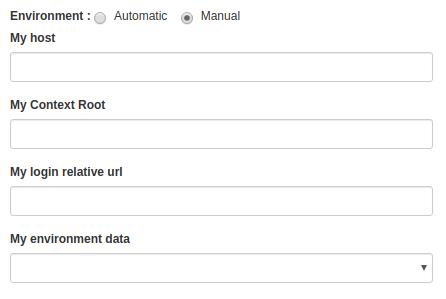
Last you need to select one or more countries.
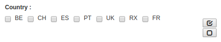
7.4. Robots settings

The robots settings can be linked to a campaign. If so, the robot(s) will be automatically selected when the corresponding campaign is loaded.
However, if the user changes this value, it will be overriden by his selection.
'Save Robot Preferencies' button save these settings in the browser cache of the device.
The selected robot can be edited using the left button. A new robot can be created using the right one.
7.5. Execution settings

-
Tag : regroup all the execution in the same tag. It help identify this execution for reporting sake. If no value, the tag will be a timestamp. you can use %USER% and %TIMESTAMP% variable in this field.
-
Verbose : Verbose define how much trace information will be output on the execution. The higher the level is from 0 to 2 the more information will be and the slower the testcase will be executed.
Trace \ Verbose Level |
0 |
1 |
2 |
Chrome & Firefox display |
no (headless) |
yes |
yes |
JSON INFO on Cerberus Application Server logs |
no |
yes |
yes |
Save Selenium log |
no |
only when result <> OK |
yes |
Full HAR file (when using Cerberus proxy executor) (1) |
no |
no |
yes |
HAR summarized stat file (when using Cerberus proxy executor) (1) |
no |
yes |
yes |
Browserstack log activation |
no |
no |
yes |
Browserstack Save HAR and Selenium log |
no |
no |
yes |
(1) HAR and stat data is only collected if cerberus_networkstatsave_active is active.
-
Screenshot : define if screenshots and video have to be taken and the frequency.
-
Page Source : define if Page source have to be taken and the frequency.
-
Robot Log : define if robot (Selenium or Appium) log will be taken.
-
Timeout : define the maximum time (in ms) to spent in an action or control. Correspond to the time Cerberus will wait until it consider that a field or object is not available.
-
Retries : Defined the number of retries for each test cases. A retry is a re submission of a testcase (in the queue) if its status is different from OK.
-
Priority : define the priority for all the test cases (reminder: the lowest (=0) the most important). Default value is 1000. Tips: Use 0 priority only when relaunching manually a test case.
-
Manual Execution : define the test case execution type: Y : manual, N : Automatic, A : Automaticly determined from test case. default value is 'N'
Execution parameter \ Test Case Group |
AUTOMATED |
MANUAL |
PRIVATE |
N |
Automated execution |
Automated execution |
Automated execution |
Y |
Manual execution |
Manual execution |
Manual execution |
A |
Automated execution |
Manual Execution |
Automated execution |
7.6. Execution result status
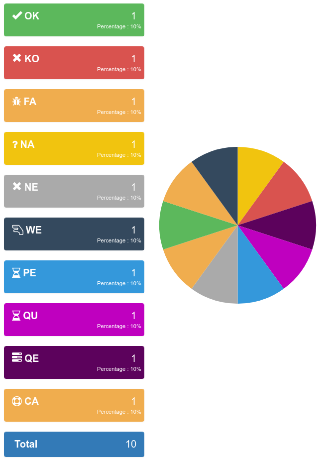
Here is a summary of all execution status with their corresponding meanings.
-
OK : The execution was performed correctly and all controls were OK.
-
KO : The execution was performed correcly and at least one control failed resulting a global KO. That means that a bug needs to be reported to development teams.
-
FA : The execution did not performed correctly and needs a correction from the team that is in charge of managing the testcases. It couls be a failed SQL or action during the test.
-
NA : Test could not be executed as a data could not be retreived. That probably means that the test is not possible in the current environment/status.
-
NE : Test Case was not executed (following a condition execution).
-
WE : Test Case was not yet executed (waiting a manual execution).
-
PE : Test Case is currently running.
-
QU : Test Case is still waiting in the queue for ressources or constrains to be released.
-
QE : Test Case failed in the queue and will not be triggered.
-
CA : Test Case has been cancelled by user.
 Something is incorrect/missing in this section? Feel free to submit modification.
Something is incorrect/missing in this section? Feel free to submit modification.
8. Execution Queuing system
8.1. Workflow
The queuing system allow you to submit many execution and have them executed automatically ASAP depending on constrain configuration.
-
Every execution that are submitted inside the queue follow a specific workflow. 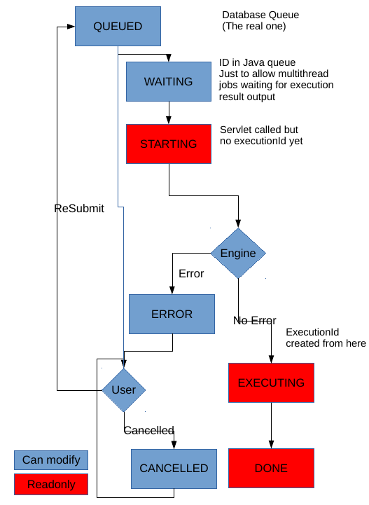
-
In order to monitor and administer the workflow every execution gets a State with an associated message. Each time the State is modified the Last State date is updated accordingly.
-
Each execution enter the queue in a QUEUED State.
-
The queue Job will analyse all the executions that are in QUEUED State in order to decide (or not) to start the execution. If none of the constrains are applied, the execution moves to a WAITING State. That state corresponding to the execution being in the final (JAVA) queue before execution.
-
It then moves to STARTING as soon as the call to the RunTestCase Servlet is done.
-
Then depending on if execution could be started, it moves in ERROR State with the associated error message or EXECUTING.
-
An execution in EXECUTING State have the execution ID defined and the followup of that execution can be monitored directly on that execution.
-
Once the execution is finished (no matter what could be the end result in terms of status - OK, KO, FA, NA, …), the execution move to the final state DONE.
-
Execution that are in state ERROR can either be submitted again in QUEUED or cancelled in state CANCELLED
-
Executions that are in state CANCELLED can also be submitted again in QUEUED state.
-
All executions that are in State QUEUED, WAITING, ERROR and CANCELLED can be modified.
-
All executions that are in State STARTING, EXECUTING and DONE cannot be modified.
8.2. Administration
The 'Executions in Queue' tab from the Executions in queue screen allow to see and count the number of exe in various state.

-
Button 'Filter Pending' allow to directly filter to QUEUED State.
-
Button 'Filter Executing' allow to filter state : WAITING, STARTING and EXECUTING
-
Refresh button allow to refresh the list without fully loading the page.
On each execution, you can modify its content by clicking on the edit button.

-
Button 'Save' allow to modify the parameters of the execution.
-
Button 'Save and submit again' is to save the new parameters and change the status again to QUEUED
-
Button 'Cancel this execution' is to cancel the execution by moving it state to CANCELLED
You can also duplicate it to a new execution that will be inserted in QUEUED state by clicking on the duplicate button.

-
Button 'Copy and submit a new execution' allow to copy the execution to a new one that will be inserted in QUEUED state.
Mass Action allow to perform similar operation in a massive way. Select a list of exe and click on Mass Action button in order to open the following screen:
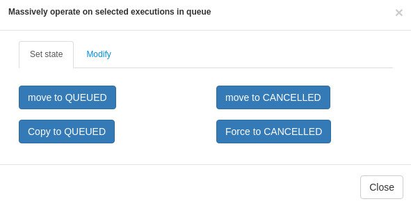
-
'move to QUEUED' allow to move an execution that is in state ERROR or CANCELLED back to QUEUED state
-
'copy to QUEUED' allow to copy the list of execution to new executions that will all be in QUEUED state.
-
'move to CANCELLED' allow to cancel the list of execution that are in state ERROR or QUEUED
-
'force to CANCELLED' should be used only in very rare occasion when some executions are stuck in WAITING, STARTING or EXECUTING state. That could happen for example if Cerberus has been stopped when executions were still processing.

On that screen you can massively modify the priority of the execution list. Just put the new priority value and cick on 'Change Priority'
8.3. Priorities management
-
By default, execution are treated in FIFO mode.
-
Each time the queue job analyse the list of QUEUED execution, it will analyse them sorted by priority ascending + by queueID ascending.
-
Default Priority value is 1000.
-
If you want to increase the priority of the given execution, you can change it to any value bellow 1000. The lower priority value takes, the higher the priority will be.
-
If you want some execution to be treated last, change it to any value above 1000.
8.4. Constrain management
When submitting too many execution in a too short period of time, the result could be uncertain due to overloading the application being tested or robot infrastructure used. In order to prevent that issue, 3 levels of constrains can be defined.
-
constrain 'constrain1_global' : Global level of constrain in order to secure that Cerberus itself is not saturated by number of simultaneous execution. Parameter cerberus_queueexecution_global_threadpoolsize allow to configure the number of simultaneous execution will handle in total.
-
constrain 'constrain2_applienvironment' : Application/Environment level constrain. An application on a given environment could have some limitation that can be controlled by that constrain. The number of simultaneous execution can be defined in 'Pool Size' field from application screen or Environment screen.
-
constrain 'constrain3_application' : Global Application level constrain. An application could have some limitation (whether environment) that can be controlled by that constrain. The number of simultaneous execution can be defined in 'Pool Size' field from application screen.
-
constrain 'constrain4_robot' : Robot level constrain. Some robot cannot handle too many execution at the same time. The configuration of simultaneous execution is done at robot host level. Please use public invariant ROBOTHOST in order to define that number of simultaneous execution using gp1 field.
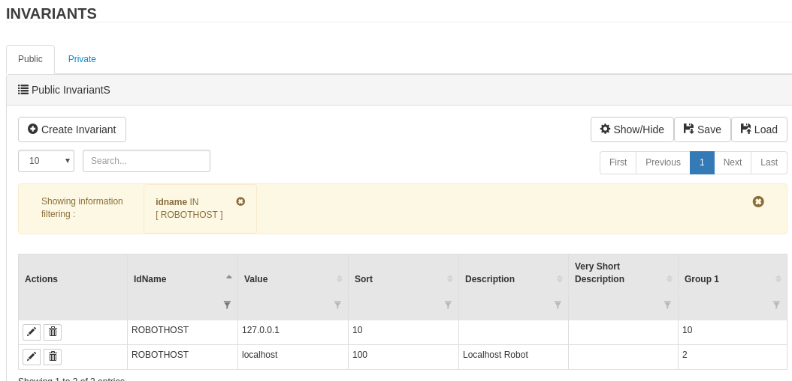
A default value can be configured with parameter cerberus_queueexecution_defaultrobothost_threadpoolsize. That parameter will be used in case the invariant entry does not exist or cannot be converted to numeric value.
|
Note
|
Only the applications that require a robot will enter to that constrain (GUI, IPA, APK, FAT). |
The 'Pools Follow Up' tab allow to control and follow up all those constrain value

In that example, there is currently 2 executions for a global maximum of 50 executions. A total of 8 executions are still in the queue (that will be treated once the 2 pending will be finished). Saturation level is at 4% and considering that global queue is not saturated, there are no execution pending on saturated queue.
There is currently 2 executions running against Cerberus application in DEV for RX country. On that application / environment, a total of 6 executions are still in queue. That queue is saturated at 100% and 6 executions are in the queue on that saturated queue.
There is currently 2 executions running against localhost robot. On that robot host, a total of 7 executions are still in queue. That queue is also saturated at 100% and 7 executions are in the queue on that saturated queue.
Sorting the last column will give the constrain/queue that require the most attention in order to speedup the global execution of the campaign.
TIP : In case you have an execution that you don’t understand why it is not released, you can modify for that execution the debug Flag to Y. Next time the queue job execute, the state message will detail the constrain that prevent the execution to be released.
The 'Queue Job Status' tab allow to monitor the 'queue execution job'.
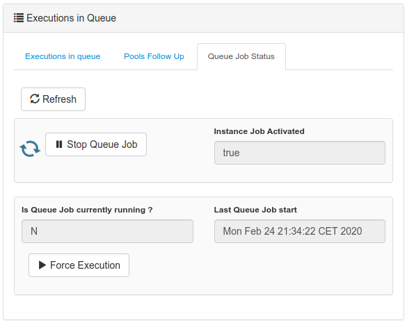
-
'Instance Job Activated' is at Y when the job on that instance (Tomcat JVM instance) is allowed to run. Job can be temporary disabled during maintenance period using the manage API.
-
'Is Queue Job currently running ?' is at Y when the job that analyze the queue is currently running (that should almost never happen).
-
'Last Queue Job start' correspond to the time when the last job was triggered. That job automatically trigger when a new execution is inserted inside the queue or an execution finish (releasing some space for a new execution to start).
Button 'Stop Queue Job' allow to stop the queue job to be triggered. That will stop submitting new execution keeping all of them into the queue until the job is started again.
Button 'Force Execution' will force the execution in case the job is not automatically triggered.
 Something is incorrect/missing in this section? Feel free to submit modification.
Something is incorrect/missing in this section? Feel free to submit modification.
9. Campaign management
9.1. Test campaign
A campaign is composed of - a list of testcases (that can be specified either by test battery of labels) - a list of country(ies) - a list of environment(s) - a list of browser.
Campaign is used when you want to trigger a perimeter of testcase on a given country and environment. Campaign name can be specified when calling public API AddToExecutionQueue.
When a Campaign execution is triggered, notifications can be sent to a distribution list at the beginning or the end of the campaign execution. Flags can be used in order to activate the sending of the email. Distribution list can be configured. Email from, subject and body can be configured by changing parameters that start by cerberus_notification_tagexecutionend and cerberus_notification_tagexecutionstart

9.2. Schedule campaign
The campaigns can be scheduled through the modal. Open the scheduler tab and pass the Quartz-CRON expressions that will plan the execution.

Cron is an expression format that will allow you to define a frequency of execution. To generate one easily use the following site: http://www.cronmaker.com/
you can add as many CRON entries as you want
 Something is incorrect/missing in this section? Feel free to submit modification.
Something is incorrect/missing in this section? Feel free to submit modification.
Test Data Management
In this section, you will find information on how to manage and use test case data in Cerberus
 Something is incorrect/missing in this section? Feel free to submit modification.
Something is incorrect/missing in this section? Feel free to submit modification.
10. Data library
10.1. Create data
A Test Data Library is used to store or define the way to retrieve the data that will be necessary to perform the tests. Different way of getting the data can be used (INTERNAL, SQL, SERVICE or CSV) but that definition is independent from the test case definition so that you can easily change from one to another without impacting all the corresponding test cases.
The first sub-data does not require a name, it correspond to the key of the datalib and should be unique to that entry. Inside a testcase, if property PROP1 is defined as getFromTestDataLib on that data, that sub data is retreived as %PROP1%. The other sub data values are retreived as %PROP1.SUBDATA1%.
If you do not select an environment, a system and a country, your data will be available for all environments, systems and countries.
Cerberus allows the definition of 4 types : INTERNAL, SQL, CSV and SERVICE
TYPE |
Description |
INTERNAL |
Static test data - in each execution the values used by the test cases are statically definied directly in Cerberus. |
SQL |
Test data obtained from a SQL execution – values depend on what the SQL return on the corresponding environment. |
CSV |
Test data obtained from a CSV file structure privided by a URL. Values depend on the result of the service call to CSV file. |
SERVICE |
Test data obtained from a SERVICE call – values depend on the result of the service call. Service needs to be configured on Service screen inside application menu. |
10.2. Data configurations
10.2.1. INTERNAL configuration
This is used to store the test data directly inside Cerberus. This is considered as being static as it will require to define manually each data inside Cerberus. No specific configuration needed, just feed static sub data values in subdata tab.
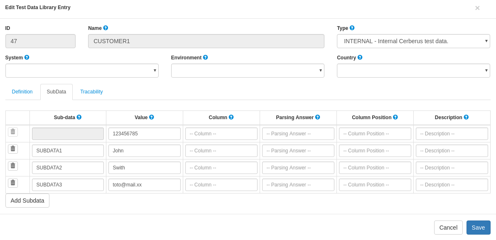
NOTE : You can define as many INTERNAL data lib entry as you want be giving them the same name. That way, Cerberus will be able to pick one of them from that list (just like it would for the dynamic type such as SQL, SRVICE or CSV).
10.2.2. SQL configuration
This is used to retrieve the test data in a dynamic way from any database that has JDCB driver available (it still require Glassfish configuration to create the corresponding connection pool). The SQL will be performed during the test execution to get the data in the right environment at the right timing..
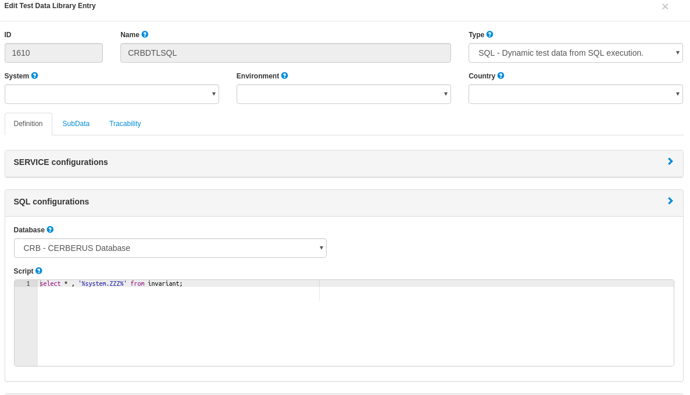
Field |
Description |
Database |
Database where the script attribute should be executed. |
Script |
SQL Script you want to execute. |
All Subdata now need to be defined in Column with the name of the column where the subdata is defined.

10.2.3. SERVICE configuration
Just like SQL, it will get the data in a dynamic way but from a service call in stead of an SQL. The best option is to define a corresponding service (Service) and point to it (it can then be REST (both GET or POST) or SOAP).

But you can also directly define a Service call request (Service Path, Method and Envelope) if it is in a SOAP format.
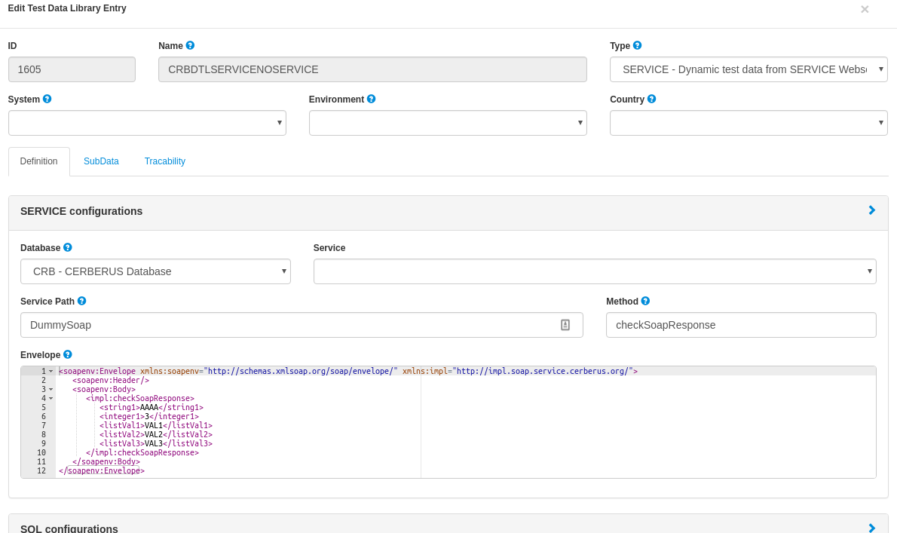
Field |
Description |
Database |
Database where the Service Path will be requested. (optional) |
Service |
Name of the service that define the request. |
Service Path |
Location of the service. Example: http://mydomain/mywebservicelocationmywebservicelocation |
Method |
Method that is invoked by the SOAP request/call. |
Envelope |
Envelope that is sent in the SOAP request. |
All Subdata now need to be defined in Parsing Answer with the xpath or jsonpath where the subdata is defined.


10.2.4. CSV configuration
Just like SQL and SERVICE, it will get the data in a dynamic way but from a csv flat file (that can be static or dynamic). Just define the path to the csv file and separator used.

Field |
Description |
Database |
Name of the database the define the root path where to get the CSV file. (optional) |
CSV URL |
CSV URL specifies the URL where the CSV can be reached. Can be a full URL but also a relative URL in case the Database information is provided and configured at environment level. |
Separator |
Separator used parsing a CSV. |
All Subdata now need to be defined in Column Position with an integer that define the number of the column where the subdata is defined.
10.2.5. Database field configuration
Database can be configured for data library of types : SQL, SERVICE and CSV. It is used in order to make the access to the data linked to the environment so that, a testcase executed in PROD environment will not call the same URL (or access the same JDBC ressource) as in UAT.

In that example, CRB database has been defined and as a consequence, CSV URL has been modified to be relative.
Databases can be created inside invariant screen. Use PROPERTYDATABASE idname.

Once the database is created in invariant table and used inside the test data library, you can define the context of the data access calls for each environment (System + Country + Environment) inside the Environment screen for the 3 types of datasource :
-
For SQL Test Data Library -→ JDBC Ressource : Connection pool name to be configured inside Glassfish application server.
-
For SERVICE Test Data Library -→ SOAP Service URL : Left part of the URL that will be used to call the Service URL
-
For CSV Test Data Library -→ CSV Service URL : Left part of the URL that will be used to get the CSV file.

 Something is incorrect/missing in this section? Feel free to submit modification.
Something is incorrect/missing in this section? Feel free to submit modification.
Integration
In this section, you will find information on how to use Cerberus in your continuous integration organization.
 Something is incorrect/missing in this section? Feel free to submit modification.
Something is incorrect/missing in this section? Feel free to submit modification.
11. Environment
11.1. Environment
In this section, you will find information on how to manage environment in Cerberus.

11.2. Environment Attributes
Field |
Description |
System |
System. |
Country |
Country. |
Environment |
Environment. |
Description |
Description of the test. |
Active |
Define if the test is active. When Inactive, all associated test cases will be desactivated and will be allowed to be executed. |
 Something is incorrect/missing in this section? Feel free to submit modification.
Something is incorrect/missing in this section? Feel free to submit modification.
12. Application configuration
12.1. Application
In this section, you will find information on application configuration in Cerberus.

12.2. Application attributes
Field |
Description |
Application |
Cell in column 2, row 3 |
Description |
Cell in column 2, row 3 |
Sort |
Cell in column 2, row 3 |
Type |
The Type of the application define whether the application is a GUI, a service or a batch treatment. More detail in the Application type section. |
New Bug URL |
This correspond to the URL that points to the page where a new bug can be created on the Bug system of the application. More detail in the New Bug URL section. |
12.2.1. Application type
- Application type recognizable by Cerberus
-
-
GUI (Web application using Selenium backend)
-
APK (Android application using Appium backend)
-
IPA (IOS application using Appium backend)
-
FAT (Fat application using Sikuli backend)
-
BAT (BATCH application)
-
SRV (Service)
-
NONE (Not defined)
-
12.2.2. New Bug URL
This correspond to the URL that points to the page where a new bug can be created on the Bug system of the application.
The following variables can be used inside the URL :
%TEST% |
Test |
%TESTCASE% |
Test case reference |
%TESTCASEDESC% |
Description of the test case |
%EXEID% |
Execution ID |
%EXEDATE% |
Start date and time of the execution |
%ENV% |
Environment |
%COUNTRY% |
Country |
%BUILD% |
Build |
%REV% |
Revision |
%BROWSER% |
Browser used during the test execution (ex : firefox, chrome,…) |
%BROWSERFULLVERSION% |
Browser fulle version used during the test execution (ex : firefox 47 LINUX,…) |
 Something is incorrect/missing in this section? Feel free to submit modification.
Something is incorrect/missing in this section? Feel free to submit modification.
13. Application Object
13.1. Application object
In this section, you will find information on application object in Cerberus.

13.2. Application object attributes
Field |
Description |
Application |
The application linked to the object |
Object |
The name of the object |
Value |
The value of the object |
File Name |
The preview of the picture of the object |
 Something is incorrect/missing in this section? Feel free to submit modification.
Something is incorrect/missing in this section? Feel free to submit modification.
14. Service Library
14.1. Introduction
There are four service type :
-
SOAP : for SOAP endpoints
-
REST : for REST endpoints. Http with corresponding method (GET, POST,…)
-
FTP : interact with files using FTP protocol
-
KAFKA : for Apache Kafka Topics
14.2. SOAP Service
TBD
14.3. REST Service
TBD
14.4. FTP Service
TBD
14.5. KAFKA Service
In order to connect to a Kafka stream, you need to feed the following parameters:
-
Service Path : should have the list of kafka and port target. Ex : kafka-public-company-id.aivencloud.com:27453
-
Kafka Topic : the name of the topic to interact with Ex : cerberus-example
Additionally, you can define some extra key/value parameters inside Header tab.
Ex for connecting to Kafka public Aiven service in SSL mode (value depend from your own configuration) :
security.protocol |
SSL |
ssl.keystore.type |
PKCS12 |
ssl.keystore.location |
/opt/config/client.keystore.p12 |
ssl.keystore.password |
password |
ssl.truststore.location |
/opt/config/client.truststore.jks |
ssl.truststore.password |
password |
ssl.endpoint.identification.algorithm |
In Cerberus, depending on the value provided in Method field, you can :
-
produce an event to a topic → PRODUCE
-
search for an event in a topic → SEARCH
14.5.1. PRODUCE
When producing an event to Kafka, you should define :
-
'Kafka Key' that will contain the key of the event produced. Kafka will use that information in order to route it to correct partition.
-
'Service Request' that will contain the content of the event sent to the corresponding topic.
14.5.2. SEARCH
When searching an event from Kafka, at the action level you will be allowed to provide :
-
Nb Evt : That define the max number of event to wait until the action is released with the associated content.
-
Evt Wait sec : That define the number of second that Cerberus will wait until it gets the target 'Nb Evt' events to retrieve.
Cerberus will wait until either the number of event retrieved or time is reached.
When a test case contain a callService action with a KAFKA SEARCH method, at the beginning of the execution, Cerberus will automatically store the latest offset of each partition of the selected topic. When the action is reached, Cerberus will automatically search the events starting at the previously saved offset. That prevent Cerberus to search on the full list of events inside the topic securing performance of the test over time.
Additionally, you can fill a 'Kafka Filter Path' in jsonpath format and corresponding 'Kafka Filter Value' in order to filter the events found to some specific ones.
The best practice is to generate a functional unique key to Cerberus (e.g. 'cerberus%system.EXECUTIONID%') or use an existing one that will be available in the events to filter the results.
Example
The results will be stored in the Cerberus elements (as it is done for SOAP/REST response) and filtered will all the elements matching the filter path = value.
TIPS : If you want to have multiples conditions you can use the following syntax as json path :
 Something is incorrect/missing in this section? Feel free to submit modification.
Something is incorrect/missing in this section? Feel free to submit modification.
15. SQL Library
In this section, you will find information on SQL library in Cerberus.
 Something is incorrect/missing in this section? Feel free to submit modification.
Something is incorrect/missing in this section? Feel free to submit modification.
16. Deploy type
16.1. Deploy Type
In this section, you will find information on deploy type.
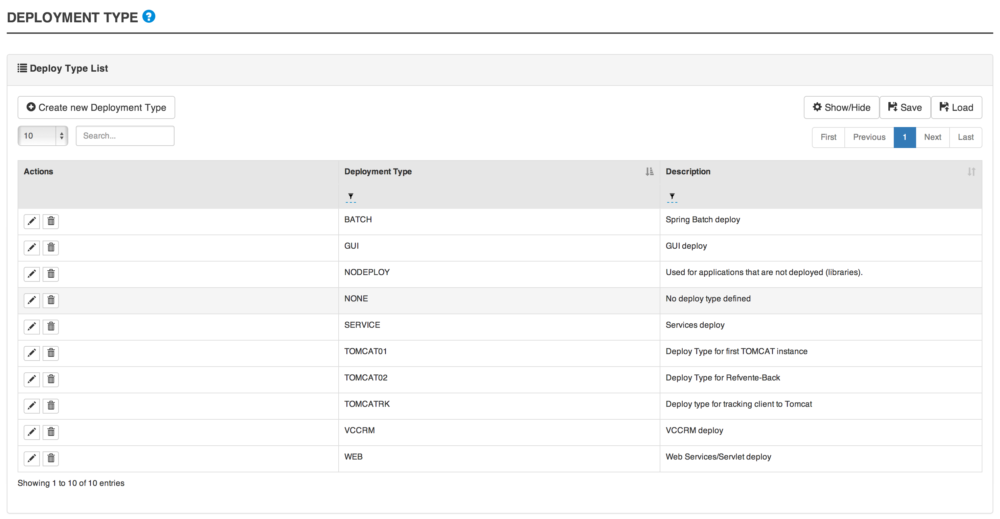
16.2. Deploy Type attributes
Field |
Description |
Deploy Type |
A name of a deploy type. |
Description |
A description of the deploy type. |
 Something is incorrect/missing in this section? Feel free to submit modification.
Something is incorrect/missing in this section? Feel free to submit modification.
17. Batch
17.1. Batch invariant
In this section, you will find information on batch

17.2. Batch invariant attributes
Field |
Description |
Batch |
The name of the batch. |
System |
The system for which the batch will be available. |
Description |
A description of the batch. |
 Something is incorrect/missing in this section? Feel free to submit modification.
Something is incorrect/missing in this section? Feel free to submit modification.
18. Build content
18.1. Build content
In this section, you will find information on build content in Cerberus
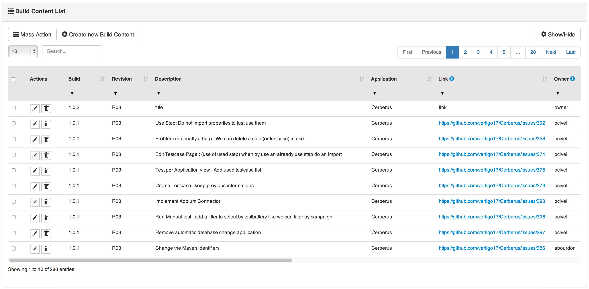
18.2. Build content attributes
Field |
Description |
To build |
To Build. |
18.3. Create build content
18.3.1. Manually
-
Go to Integration → Build Content.

-
Click on Create new build content.
-
Select the Build.
-
Continue to describe.
-
Click on Save.
-
18.3.2. Automatically
Calling the associated public service.
 Something is incorrect/missing in this section? Feel free to submit modification.
Something is incorrect/missing in this section? Feel free to submit modification.
19. Build / Revision
19.1. Build Revision invariant
In this section, you will find information on build revision invariants

19.2. Build Revision invariant attributes
Field |
Description |
System |
The system for which the batch will be available. |
Level |
to describe. |
Sequence |
to describe. |
Version Name |
to describe. |
19.3. Create build/revision invariant
-
Go to Integration → Build Rev Definition.

-
Click on Create new build revision definition.
-
Select the system for which the build/revision will be available.
-
Select the Level. 1 for Build and 2 for Revision.
-
Feed the Sequence field with a number to sort the build/revision.
-
Feed the Version Name field that will be displayed.
-
Click on Save.
-
 Something is incorrect/missing in this section? Feel free to submit modification.
Something is incorrect/missing in this section? Feel free to submit modification.
Administration
In this section, you will find information on all page and services enabled for administrators.
 Something is incorrect/missing in this section? Feel free to submit modification.
Something is incorrect/missing in this section? Feel free to submit modification.
20. User management
20.1. User creation
-
Go to Administration → User Management.
-
Click on Create User.
-
Feed the Login field.
-
Feed the Name field.
-
Select the Team (optional).
-
Select the Default Sytem field.
-
Set the Request to 'Y' for a new user. User will have to modify his password at the first connection.
-
Feed the Email.
-
Affect user rights in groups tab.
-
Click on Save.
-
20.2. User rights
Select the groups to affect the rights wanted.

20.3. Access by system
 Something is incorrect/missing in this section? Feel free to submit modification.
Something is incorrect/missing in this section? Feel free to submit modification.
21. Log viewer
Most of the change triggered in Cerberus are recorded in a table.

|
Warning
|
To guaranty performance of Cerbeurs over the time, please refer to [Clean Database] section to get information on database maintenance operation. |
 Something is incorrect/missing in this section? Feel free to submit modification.
Something is incorrect/missing in this section? Feel free to submit modification.
22. Database maintenance
|
Note
|
Every new release of Cerberus come with embeded scripts to upgrade the database in order to guaranty consistency between the application and its database. |
After updating your cerberus version, as described in the Upgrade Cerberus Version section, you will be notified logging in Cerberus as an administrator.

Then, you are redirected to the Cerberus Database Maintenance page that allow to apply the scripts one by one.

When the database is up-to-date, you will find this information.

|
Warning
|
Application and Database Must be in the same version. |
 Something is incorrect/missing in this section? Feel free to submit modification.
Something is incorrect/missing in this section? Feel free to submit modification.
23. Parameters
23.1. Parameter
In this section, you will find information about Cerberus parameters.
|
Warning
|
The tunning of the parameters is necessary to unlock all the features, as described in the [Cerberus configuration] section. |
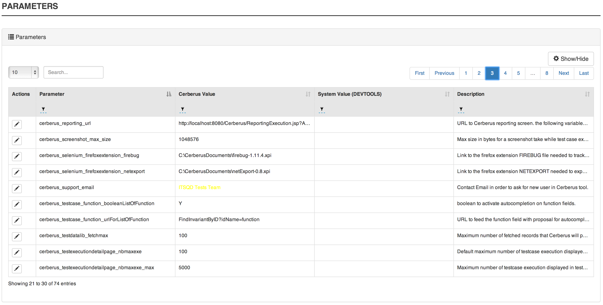
23.2. Parameter attributes
Field |
Description |
Parameter |
The parameter recognized by Cerberus. |
Value |
The default value used in case the system value is empty. |
System Value |
The specific value for the system. |
Description |
A description on the parameter. |
 Something is incorrect/missing in this section? Feel free to submit modification.
Something is incorrect/missing in this section? Feel free to submit modification.
24. Invariants
24.1. Invariant
In this section, you will find information on invariant private and public.
|
Note
|
Private invariants are not editable because used by the Cerberus engine or the user interface. |
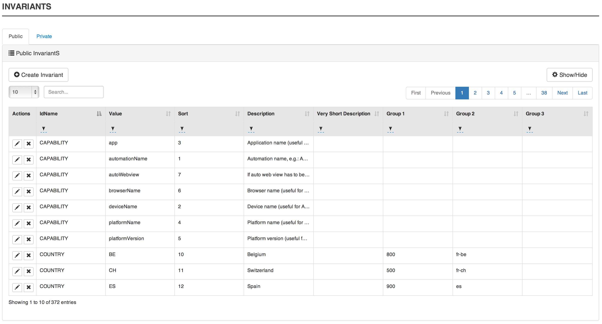
24.2. Invariant attributes
Field |
Description |
IdName |
The name of the invariant. |
Value |
The value set for the invariant. |
Sort |
An integer used to sort invariants. |
Description |
The description of the invariant. |
Very Short Desc |
A very short desc that can be displayed in the invariant. |
Group1 |
A first level of aggregation to group invariant. |
Group2 |
A second level of aggregation to group invariant. |
Group3 |
A third level of aggregation to group invariant. |
24.3. Create public invariant
-
Go to Administration → Invariant.

-
Click on Create Invariant.
-
Select the invariant type in IdName field.
-
Feed the Value field with the value of the invariant.
-
Feed the Sort field with an integer which will define the order the invariant will be sorted by Cerberus.
-
Feed the Description field with a description of this invariant.
-
Feed the Very Short Desc field with a short description of this invariant.
-
Feed the Group1 (Optional) field with a name to aggregate invariant.
-
Feed the Group2 (Optional) field with a name to aggregate invariant.
-
Feed the Group3 (Optional) field with a name to aggregate invariant.
-
Click on Save.
-
24.4. Invariant List
24.4.1. Country
24.4.2. Environment
24.4.3. System
 Something is incorrect/missing in this section? Feel free to submit modification.
Something is incorrect/missing in this section? Feel free to submit modification.
25. Cerberus Monitoring
In this section, you will find information on cerberus monitoring page.


 Something is incorrect/missing in this section? Feel free to submit modification.
Something is incorrect/missing in this section? Feel free to submit modification.
Cerberus Public API
When integrating Cerberus with any external tool, public API must be used. All public API are version managed in order to allow secure and stable integration. Each time the signature of the API is modified or behaviour has changed, it is implemented on a new version keeping existing version only subject to bugfix changes.
Old version of Public API can disappear (after a deprecated period) from one version to another. In order to perform the impact analysis of the systems that are calling your Cerberus installation, you can use the parameter cerberus_log_publiccalls. Setting the parameter to Y will log every public API calls performed, reporting any deprecated calls that needs to be migrated to newer version of the same API.
Every API has it’s documentation embeded that can be displayed when calling the API.
 Something is incorrect/missing in this section? Feel free to submit modification.
Something is incorrect/missing in this section? Feel free to submit modification.
26. Test Execution API
This is the APi that can be used on the test perimeter (getting testcase information, and manage executions) :
API URI |
Description |
Version List |
/RunTestCase |
Trigger a single testcase excution |
/RunTestCase |
/AddToExecutionQueue |
Allow to insert testcase execution into Cerberus Queue for execution |
/AddToExecutionQueue
/AddToExecutionQueueV001
/AddToExecutionQueueV002 |
/GetTagExecutions |
TBD. |
/GetTagExecutions |
/GetTestCases |
Provide the list of test cases by application. |
/GetTestCasesV000 |
/GetNumberOfExecutions |
Return the number of execution performed on WORKING test cases that match the following criterias. To be used for monitoring purpose. |
/GetNumberOfExecutions |
/ResultCI |
Used to provide various execution counters as well as a global OK or KO status based on the number and status of the execution done on a specific tag. |
/ResultCI
/ResultCIV001
/ResultCIV002
/ResultCIV003 |
 Something is incorrect/missing in this section? Feel free to submit modification.
Something is incorrect/missing in this section? Feel free to submit modification.
27. Integration API
This is the APi that can be used on the integration perimeter (change environment status) :
API URI |
Description |
Version List |
/DisableEnvironment |
Used to inform Cerberus that a system is disabled. |
/DisableEnvironmentV000 |
/NewBuildRevision |
Used to inform Cerberus that a new Build and Revision has been deployed on a system. |
/NewBuildRevisionV000 |
/NewEnvironmentEvent |
Used to inform Cerberus about an event that occured on a given environment |
/NewEnvironmentEventV000 |
/NewRelease |
Used to create or update a release entry of an application in a 'NONE' build and 'NONE' revision. |
/NewRelease |
/Manage |
This API should be used pior to perform database backup (global stop and start) or pior to restart an instance (instance stop). It is used to start and stop Cerberus instance or global system in a clean way by stopping submitting new executions and waiting pending execution to finish. 'token' parameter can be configured with Cerberus parameter 'cerberus_manage_token'. 'action' parameter can be either start or stop, 'scope' parameter can be either global or instance. The timeout in order to wait for all pending execution to stop can be configured with Cerberus parameter 'cerberus_manage_timeout' (default to 300 seconds). |
/manageV001 |
 Something is incorrect/missing in this section? Feel free to submit modification.
Something is incorrect/missing in this section? Feel free to submit modification.
Installation
This section describes how to install Cerberus and its associated external tools.
 Something is incorrect/missing in this section? Feel free to submit modification.
Something is incorrect/missing in this section? Feel free to submit modification.
28. Cerberus installation
28.1. Technical architecture
Cerberus is a JAVA application that is linked to a database server. Cerberus is a web application that need a browser to connect to. Cerberus also require a robot infrastructure that depend on the type of test you want to execute. Web application testing require a Selenium server when mobile application require an Appium Server and Fat application a Sikuli server.

 Something is incorrect/missing in this section? Feel free to submit modification.
Something is incorrect/missing in this section? Feel free to submit modification.
28.2. Installation guide
28.2.1. Manual installation
Please refer to INSTALL File in the Cerberus.zip package file.
28.2.2. Docker installation
-
For Windows :
-
Install Git for Windows -→ https://git-for-windows.github.io/
-
Install Docker for Windows -→ https://docs.docker.com/docker-for-windows/
-
Install Docker Toolbox for Windows -→ https://docs.docker.com/toolbox/toolbox_install_windows/
-
Clone Cerberus-source to the desired location :
-
Go to the desired location folder
-
Right click into the folder, and click Git Bash Here

-
Type the following command into Git Cmd Prompt : "git clone https://github.com/cerberustesting/cerberus-source.git"
-
Wait for cerberus-source to clone…
-
-
Run Docker. /!\ You may have to go into Docker settings to "share the drive" on which you put cerberus
-
Run Windows Command Prompt as administrator, navigate to your desired location, then subfolders compositions/cerberus-glassfish-mysql

-
Execute the following command :
-
either "docker-compose up" to run the docker-compose normally
-
or "docker-compose up -d" to run the docker-compose asynchronously
-
or "docker-compose up -d --remove-orphans" to run the docker-compose and remove already existing images
-
or "docker-compose scale selenium-node-firefox=3 selenium-node-chrome=3" to add more nodes to your Selenium Grid
-
-
Wait for the images to startup
-
Open your favorite browser and go to <docker_host>:18080/Cerberus, where <docker_host> is your Docker host
-
Further details available at https://github.com/cerberustesting/cerberus-source/tree/master/docker/compositions/cerberus-glassfish-mysql
-
For Mac :
-
For Linux :
 Something is incorrect/missing in this section? Feel free to submit modification.
Something is incorrect/missing in this section? Feel free to submit modification.
28.3. Upgrade Cerberus Version
28.3.1. Manual upgrade
Please refer to INSTALL File in the Cerberus.zip package file.
28.3.2. Docker upgrade
 Something is incorrect/missing in this section? Feel free to submit modification.
Something is incorrect/missing in this section? Feel free to submit modification.
29. External tools
For each application type there is a specific engine to run tests under it. For instance, Web applications will be handled by the Selenium Web browser automation tool.
The main goal of Cerberus is to gather this tool ecosystem to provide a common way to describe and run tests, whatever the kind of application type.
Hereafter the list of compatible application types and their associated external tool:
| Application types | Associated external tool |
|---|---|
Web |
Selenium |
Mobile (Android, Iphone) |
Appium |
Heavy |
Sikuli |
Web services |
Cerberus internal implementation |
The following sections will cover installation and configuration procedures for each associated external tool, and interface description with cloud-based cross-browser testing tools.
29.1. Selenium
Installation :
-
Download Selenium from official website : https://www.seleniumhq.org/download/
-
Start the selenium server :
java -jar seleniumjar.jar
or
java -jar seleniumjar.jar -port 4545
-
To launch Selenium in hub mode, type these commands :
java -jar (path/to/)selenium-server-standalone-2.53.1.jar -role hub java -jar (path/to/)selenium-server-standalone-2.53.1.jar -role node -nodeConfig (path/to/)DefaultNode.json
29.2. Appium
29.2.1. Table of Contents
Appium is an open source test automation framework for use with native, hybrid and mobile Web applications. It drives iOS, Android, and Windows applications using the WebDriver protocol.
This procedure covers installation and configuration of Appium v.1.6.2+.
29.2.2. Appium server installation
Android
Classic installation
Docker install
+
# Note: It requires docker-compose 1.6.0+
#
# Usage: docker-compose up -d
version: '2'
services:
# Selenium hub
selenium_hub:
image: selenium/hub:3.7.1
ports:
- 4444:4444
# Appium Docker Android
appium_android_device:
image: appium/appium
depends_on:
- selenium_hub
privileged: true
volumes:
# - /dev/bus/usb:/dev/bus/usb
- ~/.android:/root/.android
- ./localapk/:/apk/ # used to push apk to install
ports:
- 4723:4723
environment:
- CONNECT_TO_GRID=True
- SELENIUM_HOST=selenium_hub
# Enable it for msite testing
#- BROWSER_NAME=chrom
+
IOS
Installation
-
Install Xcode 8.1+
-
Install the Apple Developer Tools via this external documentation
-
Follow the complete procedure from this external documentation and apply the following commands and fixes:
-
Carthage cannot be installed via npm but brew. Thus, install Carthage by executing:
brew install carthage
-
Execute the following additional commands:
npm install -g ios-deploy --unsafe-perm=true npm install -g deviceconsole brew uninstall ideviceinstaller brew uninstall libimobiledevice brew install --HEAD libimobiledevice brew unlink libimobiledevice && brew link libimobiledevice brew install ideviceinstaller brew unlink ideviceinstaller && brew link ideviceinstaller
CautionNote about the current Appium version from npmAt the time of writing, the installed Appium version (1.6.2) from the above procedure doesn’t work properly with Cerberus. Only the 1.6.3-SNAPSHOT version was able to correctly start application. The following commands will help you to install the latest version of Appium (extracted from the official documentation):
git clone https://github.com/appium/appium.git cd appium npm install -g mocha npm install -g gulp npm install -g gulp-cli npm install gulp transpile
-
Application sign configuration
The latest version of Appium uses the appium-xcuitest-driver which depend on the Web Driver Agent that need to be deployed on the tested device. Thus, the Appium server’s host needs to be configured to be allowed to deploy application on tested device.
Appium server’s host must:
-
Have its associated Apple account registered to a Apple Team Development
-
Have downloaded the iOS Development signing identity associated to the registered Apple Team Development
-
Have downloaded a provisioning profile associated to the registered Apple Team Development that allow:
-
at least the Web Driver Agent application (identified by the
com.facebook.WebDriverAgentLibbundle identifier) -
the tested device to install the Web Driver Agent application
-
Once all of these previous prerequisities are met, then create a appium.xcconfig file and fill it with the following lines (where <Team ID> is your Development Team identifier):
DEVELOPMENT_TEAM = <Team ID> CODE_SIGN_IDENTITY = iPhone Developer
This file will be used further by execution. Look at the Run section for more details.
Run
Run Appium server can differ following the way you installed it.
Installation from npm
If Appium has been installed from npm, then simply starts Appium server by executing:
appium
Installation from Appium sources
If Appium has been installed from its sources, we encourage to create an executable file to start and configure Appium server more easily. Then:
-
Create a appium file and fill it with the following lines
#!/bin/bash cd /path/to/appium/sources && node . "$@"
-
Make this file executable
chmod +x /path/to/the/appium/file
-
Locate the root directory of this executable file and add it to your
PATHvariable by adding this line to your ~/.bash_profile (or any terminal session start) file:export PATH=/path/to/the/appium/file/root/directory:$PATH
-
Restart your terminal session
-
Start Appium server by executing
appium
Note for IOS application testing
As viewed from previous section, Appium has to deal with Apple application sign.
This could be done by sending the xcodeConfigFile capability to the Appium server.
But you may want to use the same value for any request, because the Apple Development Team is often unique within an organization.
It could be the same for the realDeviceLogger capability because Appium can always using deviceconsole as real device logger.
This can be achieved by starting the Appium server with the --default-capabilities option and giving it the list of default capabilities.
For maintenance reason, we recommend to delegate definition of the list of capabilities into a JSON file as the following:
-
Create a file named common.caps (for instance)
-
Fill it with your default capabilities
{ "xcodeConfigFile": "/path/to/appium.xcconfig", "realDeviceLogger": "/usr/local/lib/node_modules/deviceconsole/deviceconsole" } -
Then start Appium server by executing
appium --default-capabilities /path/to/common.caps
29.2.3. Client use
The following section will show different use cases to connect to the Appium server.
Execute mobile test case with Cerberus
Once you wrote your test case, Cerberus can execute it to the desired mobile by configuring the associated Robot
Inside Cerberus, open the Robot page (Run → Robot), and, depending on the application type, fill the Robot with the following configuration:
Android


|
Note
|
Values are given as example. feel free to modify them according to your needs. |
IOS
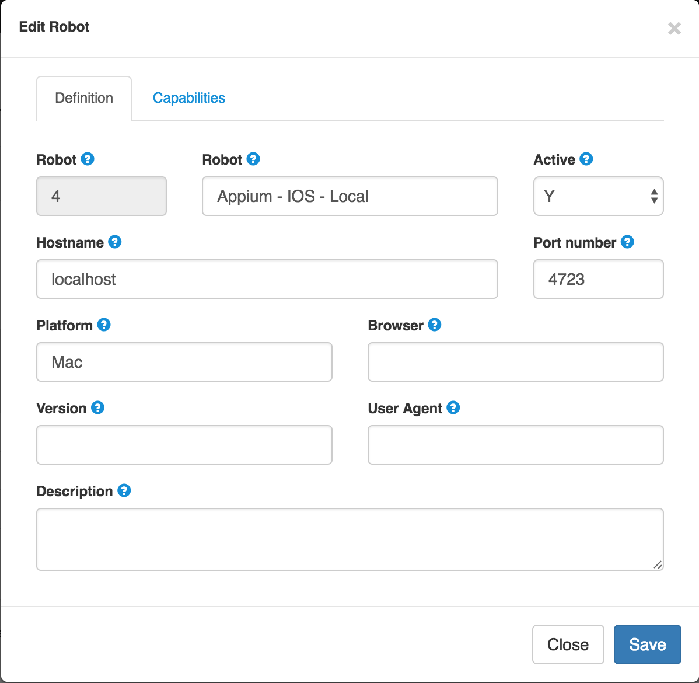
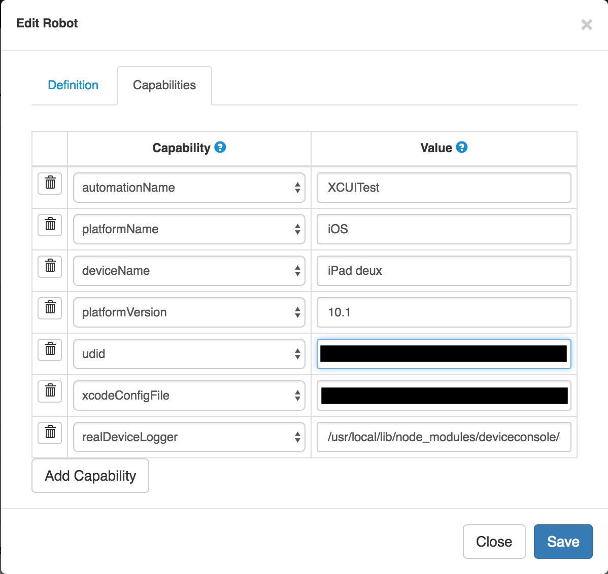
|
Note
|
Values are given as example. feel free to modify them according to your needs. The two last capabilities |
Inspection
Inspection is used to locate application’s element by identifier, XPath, etc. Theses values can so be use inside Cebrerus to describe automated test cases.
Inspection can be done by using the Appium client interface.
Installation
Install latest client from the official page.
Configuration
Appium client interface has to be configured to be only used for inspection. to have application’s element XPath for instance):
From the General settings menu:
-
Fill the Server address input field with the Appium server address
-
Fill the Port input field with the Appium server port
-
Unable the Use Remote Server option

For Android case, open the Android settings menu and:
-
Fill the App Path with the absolute path (or URL) of the application APK
-
Fill the Platform Name by
Android -
Fill the Automation Name by
Appium -
Fill the Platform Version by your device platform version
-
Fill the Device Name by your device name

For IOS case, open the IOS settings menu and:
-
Fill the App Path with the absolute path (or URL) of the application IPA
-
Fill the Force device input filed by your device name
-
Fill the Platform version input field by your platform version. It must be lower or equal than your Xcode SDK supported version (for instance, 10.1 by using Xcode 8).
-
Fill the UDID input field by your device’s UDID number
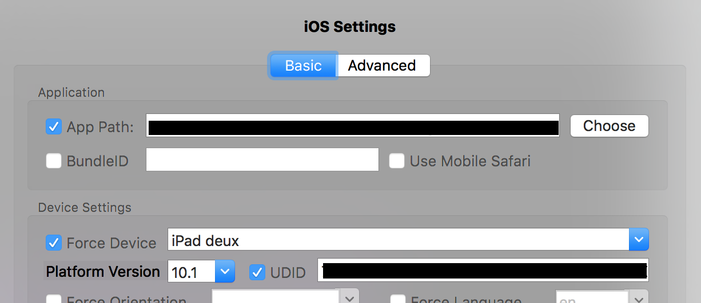
Run
Once Appium client is correctly configured, simply click on the Android or IOS radio button following the application definition and then click on the Inspector button.
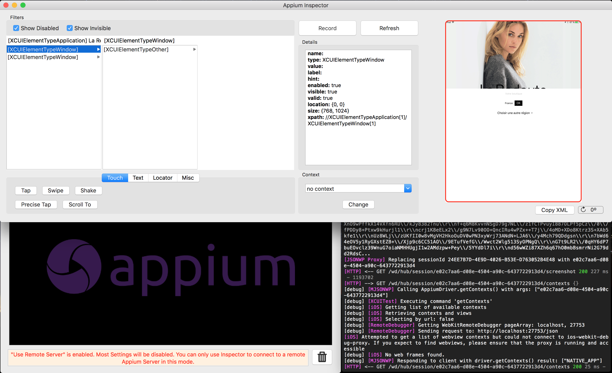
29.2.4. Useful links
| Title | Link |
|---|---|
List of Appium server capabilities |
https://github.com/appium/appium/blob/master/docs/en/writing-running-appium/caps.md |
29.3. Sikuli
29.3.1. Sikuli installation
Sikuli is an open source project that automates anything you see on the screen of your desktop computer running Windows, Mac or some Linux/Unix. It uses image recognition powered by OpenCV to identify and control GUI components. This is handy in cases when there is no easy access to a GUI’s internals or the source code of the application or web page you want to act on..
This procedure covers installation and configuration of SikuliX 1.1.1.
|
Note
|
Sikuli have to be installed only on the server where the test will run (on the robot server)!
Cerberus will interact with Sikuli that will control the system on which the test will be executed. Please notice that Sikuli have not to be installed on the Cereberus Server, but only on robot server. |
Prerequisites
SikuliX can be used on systems with :
-
Windows XP and later including Windows 8 and 10 (32-Bit or 64-Bit)
-
Mac OSX 10.6 and later including 10.10 and 10.11 (64-Bit only)
-
Linux/Unix systems depending on the availability of the prerequisites (32-Bit or 64-Bit)
In any case you must have a valid Java installation of at least Java 7 (JRE (runtime only) or JDK (runtime + development kit)). It is highly recommended, to always have the latest stable Oracle/Sun Java version on your system (currently Java 8, does not work with Java 9). Equivalent versions of OpenJDK should work as well and are recommended on Linux systems..
On 64-Bit capable systems a Java 64-Bit version is strongly recommended. SikuliX will detect Java’s bitness at runtime and select the fitting native library set automatically. So you might freely switch between different Java versions with the same SikuliX on one machine.
Installation
After having downloaded sikulixsetup.jar, you should consider the following recommendations, before doing anything:
-
select a prominent folder that is intended, to permanently contain all artifacts making up SikuliX
-
the path to this folder and its name should not contain any blanks or special characters (example: C:\SikuliX)
-
the folder should not be a program or application folder with special system access restrictions (must be freely user writeable) into this folder copy/move sikulixsetup….jar
-
launch sikulixsetup.jar
-
Choose either the option 1 (Full package with IDE) or the option 2.
-
After having made your selections, click the button [Setup Now].
-
If everything works well, after successful internal download of the needed packages, you will get some intermediate yellow badges, hopefully positive popups from the tests and a final success message.
— You might find the following files in your SikuliX setup folder:
SikuliX-1.1.0-SetupLog.txt --- contains debug information of setup workflow sikulixsetup-1.1.0.jar (might have a lengthy version suffix) runsikulix(.cmd) --- command script for commandline usages of SikuliX sikulix.jar --- (non-Mac systems only) SikuliX IDE and scripting support (option 1) SikuliX.app --- (Mac systems) Mac application, should be moved to /Applications (option 1) sikulixapi.jar --- Java programming support (option2)
|
Note
|
See official documentation here for more details. |
Connect Cerberus to Sikuli
You’ll need to download the project cerberus-extension-sikuli to interface Cerberus with your sikuli server.
-
Download the cerberus-extension-sikuli.
-
Download Selenium Standalone Server.
-
Unzip cerberus-extension-sikuli and put the cerberus-extension-sikuli-x.x.x-full.jar it in the same folder than the selenium server.
-
Create a bat/sh file with the following command lines:
-
For a FAT Client
-
No needs of selenium server, you can use this cerberus extention in a standalone mode (since cerberus-extension-sikuli-1.1.0-full).
start /b java -jar cerberus-extension-sikuli-x.x.x-full.jar
-
For a WebApplication
Injecting the main servlet of this cerberus extension starting the selenium hub.
start /b java -jar selenium-server-standalone-x.xx.x.jar -role hub -port 5555 start /b java -cp selenium-server-standalone-x.xx.x.jar;cerberus-extension-sikuli-x.x.x.jar org.openqa.grid.selenium.GridLauncher -role node -hub http://localhost:5555/grid/register -port 5556 -servlets org.sikuliserver.ExecuteSikuliAction
29.3.2. OCR setting
OCR (optical character recognition) can be enabled with sikuli, please follow the procedure below to set sikuli.
-
When installing Sikulie, select option 3 :
-
When installation is done, run sikuli IDE. Click on File > Preferences > More options Then select toolboxes Allow searching for text / Allow OCR :
Cerberus should now be able to find text.
30. Cloud
For Web and Mobile testing, Cerberus can be interfaced with cloud-based testing tool to avoid to manage complexity of robot farm management. Multiple combination of operating system, browser and version are available.
30.1. Browserstack
30.1.1. Introduction
You can use Browserstack as robot infrastrucure. In the Cerberus demo integration chain, functionnal tests are executed through BrowserStack, that allow to validate the regression for each commit.

To run your tests on BrowserStack Automate, you must:
30.1.2. 1) Upload the app:
According to browserstack documentation the app can be uploaded through it’s REST API:
curl -u "USERNAME:ACCESS_KEY" -X POST https://api.browserstack.com/app-automate/upload -F "file=@/path/to/app/file/Application-debug.apk"
the response will give the app hash id: bs://fecad32e3d0900192ccc27747d037ead7427b1ba
30.1.3. 2) Create/Update the Robot
To execute the tests with browserstack the usage of a robot is required to pass certain capabilities to appium
To do it navigate into Robot page and fill the necessary fields:
-
Robot - robot name
-
Hostname - hub-cloud.browserstack.com
-
Host Username - browserstack username
-
Host Password - browserstack access key
-
Port - 80
-
Platform - iOS / Android
-
Browser - iphone and android

The minimum capabilities that should be set are:
app: bs://<hashed_appid>
device: deviceName to use
realMobile: true
os_version: os to test
30.1.4. 3) Update the application
The environment of the application to test with Cerberus must have set in the field Host login URL the bs://<hashed_appid>
30.1.5. 4) Trigger the test
Go to Run test page and select the test you want to execute with the previously created robot and trigger the execution.
Maintenance
Maintenance introduction
 Something is incorrect/missing in this section? Feel free to submit modification.
Something is incorrect/missing in this section? Feel free to submit modification.
31. Monitor Cerberus performance
Maintenance monitoring Cerberus
 Something is incorrect/missing in this section? Feel free to submit modification.
Something is incorrect/missing in this section? Feel free to submit modification.
32. Database Purge
Maintenance Purge Database
 Something is incorrect/missing in this section? Feel free to submit modification.
Something is incorrect/missing in this section? Feel free to submit modification.
33. ChangeLog
33.1. 1.1.13
Bug fixes
-
[GUI] Start and End date fixed on Execution reporting by tag screen
-
[ENGINE] Condition that fail to execute (ex numeric control using string) now also fail the corresponding control/action/step/execution
-
[GUI] @ character now allowed in robot definition.
-
[GUI] On homepage, select box now works on selecting the favorites tags.
-
[ENGINE] Testdatalib for SQL and CSV now support that 2 different SUBDATA gets the same column (SQL) or columnposition (CSV). That also fix the crash when the subdata key position was used on a different subdata resulting the key beeing null and crash the action result message on calculateProperty calculation.
-
[GUI] Error message was sometime appearing when dispaying testcase list in campaign page.
-
[GUI] When duplicating a testcase in WORKING status, we can now change the fields value.
-
[ENGINE] Fixed a bug that was reporting an 'Unexpected error' when queuing any execution that has exotic characters in 'test' or 'testcase'.
-
[GUI] javascript error when trying to save a testcase with no steps.
Improvements / New features
-
[GUI] Allow to link a list of label to a campaign (campaign will then include all testcases that refers to those labels + batteries)
-
[GUI] Allow to filter by label inside the run page
-
[GUI] Syntax coloring has been added for SQL, XML, Java, html
-
[ENGINE] Added proxy support when Cerberus access external ressources. Parameters starting by cerberus_proxy…_ needs to be defined.
-
[ENGINE] switchToWindow action can now also use the url of the window to switch
-
[ENGINE] SOAP with attachment is now supported again. attachement url can be specified in Service Library screen (under Request tab). Attachement URL are decoded.
-
[GUI] massUpdate on testcase can now update status and function.
-
[GUI] Added system column to testcaselist page. That will help to administer label that are system dependant.
-
[GUI] GUI Notifications from master pages now automatically disappear after few second.
-
[GUI] On reportExecutionByTag many improvements. Filter of slipt selection without reload the page.
-
[GUI] On homepage, Performance improvement on loading the tag status.
-
[ENGINE] You can now force the screensize to testcase definition (like userAgent).
-
[ENGINE] UserAgent, on execution now retreived systematicly from real value of the browser.
-
[GUI] added autocomplete from public invariant on function, useragent and screensize on all corresponding screens.
-
[GUI] All modals are now responsive
-
[GUI] Copy paste option for picture on Application Object page. Currently doesn’t work for chrome browser
-
[GUI] Added 'Label' Group in order to be able to remove the right at user level to create, update and delete Labels. Label group list of users is initialised with Test group.
-
[GUI] Global search field in User screen now also filter the group name in order to filter all users that belong to Label group by typing Label on it.
-
[GUI] Added TestStepLibrary Group in order to be able to manage StepLibrary at user level. TestStepLibrary group list of users is initialised with Test group.
-
[GUI] New responsive Login page
-
[GUI] Performance improvements on RunTests : load filter data only when displayed
-
[GUI] New menu that is now on a vertical navigation bar (that can be expand and collapse)
-
[GUI] On TestCaseExecution List page: Optimized distinct column on exe status and Start and End now displayed in date format.
-
[GUI] On TestCase page: when creating a testcase, country selection can be configured with parameter : cerberus_testcase_defaultselectedcountry. Parameter can be ALL in order to select all, empty in order to select none or a coma separated list of countries in order to select some.
-
[GUI] On TestCase page: Invert button in order to be able to invert country selection in 1 clic
-
[GUI] On TestCaseScript page: Adding a property on a testcase that has no country selected now generates an error message.
-
[ENGINE] Queue execution are kept and linked to execution. A new DONE state on queue has been created for that purpose.
-
[ENGINE] New action and control implemented for FAT application testing. Screenshot are now available.
Warning to be considered before applying the version (deprecated features)
-
Removed testdata table and associated getFromTestData DEPRECATED property. BEFORE applying the associated database change, you can use script TestDataToTestDataLib.sql inside tools/SQLscripts/ to backport the old data (testdata) to new data structure (testdatalib).
-
Warning for systems with hugue number of executions : execution time of SQL 1170 & SQL 1172 (column creation on testcaseexecution table)
-
Do not forget to add SQL to purge testcaseexecutionqueue table based on DateCreated column. (queue execution are no longuer automatically removed)
33.2. 1.1.14
Bug fixes
-
[GUI] password fix to allow more than 10 caracters.
-
[GUI] small disply issues in campaign and battery screen.
Improvements / New features
-
[ENGINE] new parameter : cerberus_queueexecution_timeout in order to set the timeout when execution is triggered from the queue.
-
[GUI] Queue can now be administered from the GUI. Every queue execution can be CANCELLED or modified and resubmitted to WAITING. State workflow documented in doc folder.
-
[ENGINE] Retry on an execution now generate new execution on the queue. That allow the feature to work on sync and async mode.
-
[GUI] Added 2 buttons on TestCaseExecution page in order to view the prameters of the corresponding Queue and create a new queue from the existing one.
-
[ENGINE] New queueing system that allow 3 level of constrains: 1) global Cerberus level -→ parameter : cerberus_queueexecution_global_threadpoolsize 2) Application environment level that can be configured in application modal at environment level (poolsize) 3) Robot IP level that can be configured in invariant table ROBOTHOST invariant (gp1 needs to be feeded with integer value) Default value taken from parameter : cerberus_queueexecution_defaultrobothost_threadpoolsize
-
[ENGINE] Execution will be taken from the Queue (QUEUED state) and triggered ASAP until any of the constrain are reached. Queue screen allow to control the result and followup the executions. 1st tab display the list of queue execution, 2nd tab the list of constrain and level of saturation of every constrain, the 3rd tab display the timing of the last job that analyzed the queue and allow to force a new trigger of that job (should be automatic at the end of every queue successfully submitted).
-
[GUI] Test Cases can now be renamed. When renamed, it loose the execution history.
-
[GUI] in ReportByTag screen, we can now edit the testcase header directly. It allows to modify comment and bugid directly.
-
[GUI] Control are now not Fatal by default.
-
[GUI] columns in all screens can now be resized.
-
[GUI] significant improvements in filtering management of lists.
-
[ENGINE] Improvements on KEYPRESS action.
-
[ENGINE] Variables can now be used inside column definition of Data Lib.
-
[ENGINE] Improvements on Sikuli connection (more actions and controls are supported as well as automatic screenshot).
-
[GUI] Online documentation are now displayed in popup and not inside a new window.
-
[GUI] We can now add multiple steps from the same modal.
-
[GUI] We can now rename a testcase (Warning link with past executions will be lost).
Warning to be considered before applying the version (deprecated features)
-
[API] /ExecuteNextInQueue is no longuer considered as public API. Triggering execution from the queue has now become an automatic process. Please get in touch with us via github if you started to use it in external scripts.
33.3. 2.0
Improvements / New features
-
[GUI] We can now edit or add service directly from TestCaseScript page.
-
[GUI] Autocompletion is now available for callservice action field.
-
[GUI] Cerberus is now available in french language.
-
[GUI] New Cerberus logo.
-
[GUI] On the homepage, we can now dynamically filter the tag from a search text.
-
[GUI] On testcase list page, mass action now allow to change application.
-
[GUI] Testcase header allow to modify testcase on an application outside the current system.
-
[Engine] Tag value can now be defined up to 255 character (used to be 50 characters max). Try to keep it the smallest as possible (for performance, storage and UI reasons).
-
[Engine] Automatic notification at the beginning or the end of a tag execution can be configured at campaign level. Body, From and Subject email can be configured with parameters that start by cerberus_notification_tagexecution
Warning to be considered before applying the version (deprecated features)
-
SQL 1226 is expected to be very long on systems that have massive number of executions.
33.4. 3.0
Bug fixes
-
Some Step was badly referenced in case the corresponding testcase was renamed. Now when testcase is renamed, the usesteps are also renamed.
Improvements / New features
-
[GUI] Added parameter cerberus_loginpage_welcomemessagehtml in order to be able to define a message in login page. This parameter replace parameter cerberus_support_email that should now contain only the support email.
-
[GUI] Property Quick delete picto in testcase script page.
-
[GUI] Inline Add/Modify of TestDataLib from testcase script page.
-
[GUI] Display property detail in modal from testcase script page without changing tab.
-
[GUI] Display the Queue State when execution is still in queue in report by tag screen.
-
[GUI] Allow to resubmit execution per status in report by tag screen. That allow quick restart of executions in 2 clicks.
-
[GUI] 1st step documentation.
-
[ENGINE] REST Service now allow DELETE, PUT and PATCH http method.
-
[GUI] Various responsive improvements on very small screens.
-
[GUI] Report by Tag page now handle pagination (in order to optimise page loading on system where more than 500 testcase are triggered on a campaign).
-
[GUI] Allow to force an execution still in queue in ERROR State. This is to make that execution still visible in reportingByTag page allowing later submition
-
[GUI] renamed parameters to make them more consistent.
-
[GUI] new variable in campaign mail notification body in order to enrich email with campaign global result per status and detail list of testcases in non OK status.
-
[ENGINE] Campaign testcase list definition can now be defined with dynamic criteria : SYSTEM, APPLICATION, STATUS and PRIORITY.
-
[GUI] Protecting password display from the GUI. Robot password and parameter password are no longuer displayed in GUI.
-
[GUI] When resubmit an execution to the queue, the popup message allow now to get to the execution page to see the result directly. Execution page will report the nb of execution in the queue before the current entry (in order to feedback the user how long to wait).
-
[GUI] Battery has been moved to label that have now 3 types available : STICKER (same as before), BATTERY (correspond to former battery) and REQUIREMENT (will be used in order to sort and identify requirements).
-
[ENGINE] Control 'verifyRegexInElement' is now supported for application type SRV.
-
[ENGINE] Variable %System.TESTCASEDESCRIPTION% is now available.
-
[ENGINE] For FAT applications, application is automatically closed at the end of the execution.
-
[GUI] For Execution and TestCase screen, contextual buttons has been harmonized.
-
[GUI] Improved filter performances by removing distinct feature on id, timestamps and descriptions.
Warning to be considered before applying the version (deprecated features)
-
A Bug has been fixed on useStep that are not correctly referenced. SQL #1247 will clean badly reference Steps. You can get that list before beeing automaticly cleaned with SQL : SELECT a.* from testcasestep a LEFT OUTER JOIN testcasestep b on a.usesteptest=b.test and a.usesteptestcase=b.testcase and a.usestepstep=b.step WHERE b.test is null and a.usesteptest is not null and a.usesteptest != ''
-
Upgrade Java to v1.8 -→ Please check your Cerberus infra has JAVA 8.
-
Upgrade Appium java-client to 5.0.4 -→ Please check that your Robot infra support the change before moving to that new client version.
-
Upgrade Appium java-client to 5.0.4 -→ Please notice that custom swipe is now using relative coordinate instead of absolute one. You may have to change your test implementation.
-
Upgrade Selenium to 3.6.0 -→ Please check that your Robot infra support the change before moving to that new client version.
-
Battery has been moved to label (table not yet removed but will be soon).
33.5. 3.1
Bug fixes
-
Fixed issue in ReRun Button (from TestCase and Execution detail page) where environment was not selected.
-
Fixed various issues on Datalib modal when opened from TestCase page.
-
Fixed syntax %property.PROP.SUBDATA% that was not decoded.
Improvements / New features
-
[GUI] Various improvements on file attachement on Manual Executions.
-
[GUI] Display Changelog of latest version on homepage.
-
[ENGINE] Robot can now have https:// protocol specified inside the host name.
33.6. 3.2
Bug fixes
-
[GUI] Fixed issue when modification of queue entry in QUEUED state was no longer possible.
-
[GUI] Fixed the nb of execution 'still to go' counter on execution detail page when execution is still in the queue.
-
[ENGINE] Fixed Issue when user that have login larger than 10 digits cannot trigger any execution.
Improvements / New features
-
[ENGINE] Datalib length can now be decoded in order to allow dynamic size of datalib.
-
[GUI] keypress action parameters are now consistent between every application type. value2 always take key to enter whether application use Selenium, Appium or Sikuli
-
[GUI] Properties are now sorted by alphabetical order in test case execution page.
Warning to be considered before applying the version (deprecated features)
-
SQL #1289, #1290 and #1291 could be quite long on systems with a lot of executions.
-
The following tables have been removed : abonnement, qualitynonconformities, qualitynonconformitiesimpact, testbatterycontent, campaigncontent, testbattery.
-
Removed deprecated public servlet : GetCampaignExecutionsCommand.
33.7. 3.3
Bug fixes
-
Allow jsonpath syntax $[0].
-
Fixed a bug when using drag and drop of control from one action to another.
-
Allow to set parameter 'cerberus_loopstep_max' at system level.
-
No longuer cascade delete a datalib when associated service is deleted. #1635
-
No longuer cascade delete a service when associated application is deleted.
-
Fixed java.lang.ArrayIndexOutOfBoundsException Error when using a condition with variable on testcase header. #1650
Improvements / New features
-
List of Robot can now be specified inside a campaign (instead of browser). That allow to run a campaign easily on multiple configuration (Browsers, BrowserVersions, Screensizes, Devices, …).
-
Robot Declination can be defined at robot level. It will be displayed in reportByTag page inside the columns of the detail section (with Country and Environment). When no value, Robot Declination will take Robot name. Declination value can be statically defined but also dynamically defined with variables : %SCREENSIZE%, %BROWSER%, %BROWSERVERSION%, %PLATFORM%.
-
Port number is no longer mandatory on Robot screen and Run Test Page.
-
Selecting a Campaign on Run Test Page allow to change the default country, environment or robot list from campaign.
-
New criteria for testcase selection at campaign level : GROUP.
-
Cache management at property level. You can now activate cache at property level by defining a cacheExpire value in second at property level. Property result will be taken from a previous execution during that timeframe. That allow to reduce the number of calls to external systems to retrieve a data (create on the fly test data or retrieve a security token too often).
-
Renamed property type 'executeSql' to 'getFromSql'.
-
New 'ifElementNotPresent' condition on step, action and control. #1660.
-
From Execution page if execution is still in queue, page is automatically refreshed every 5 seconds and until execution start. #1653
-
New buttons on RunTestCase page in order to submit and automatically redirect to the result page (either Execution Detail or Report By Tag Page depending on how many execution were triggered). #1653
Warning to be considered before applying the version (deprecated features)
-
SQL 1300 1302 1303 and 1304 could be quite long on system with a lot of execution.
-
Actions Marked as DEPRECATED : 'removeDifference' and 'mouseOverAndWait' (Stop using them as they will soon disappear).
-
Deprecated action has been removed : 'getPageSource'. -→ Use 'getPageSource' Control for the same result.
-
Deprecated property has been removed : 'executeSoapFromLib' and 'executeSqlFromLib'. Use getFromDataLib for the same result.
-
No longuer used invariant were removed from database : 'MNTACTIVE','NCONFSTATUS','PROBLEMCATEGORY','PROPERTYBAM','RESPONSABILITY','ROOTCAUSECATEGORY','SEVERITY'.
33.8. 3.4
Bug fixes
-
Improved automatic reload of execution detail page when execution still in queue.
-
Fixed filters on ReportByTag page.
-
Fixed nullPointerException when service call provide empty result.
Improvements / New features
-
Added new system variables : "TOMORROW-yyyy", "TOMORROW-MM", "TOMORROW-dd", "TOMORROW-doy".
-
New Interactive tutorial available from Documentation menu.
-
For Application Services, GET Query String is also feed from active Request details (key/value). Just like Postman does.
-
Various documentation improvements.
-
New QE execution status in order to split execution still in queue from the ones that will not be processed (because in ERROR). #1707
-
For Mobile devices (Appium)
-
Android : Fix a Bug on webview with Android devices : can’t type correctly a field.
-
Android : New action
executeCommandto execute a shell command (adb shell) on android devices -
Android and iOS : New action
scrollToto scroll to an element or a text
-
Warning to be considered before applying the version (deprecated features)
-
Removed Opera support following selenium deprecation.
33.9. 3.5
Bug fixes
-
Fix Critical issue when using glassfish 5 : (java.lang.ClassNotFoundException: org.joda.time.ReadableInstant)
-
Fixed Issue when creating or duplicating a datalib that has a special character.
-
Put back the Maintenance Activation flag combobox on environment modal.
Improvements / New features
-
AddToExecutionQueueV003 servlet have now new option for manualUrl (2) that override application definition url/contextroot/loginurl and envdata.
-
New system variable : %system.APP_CONTEXTROOT% and %system.EXEURL%
-
New property type
getFromCommand. Available for appium android devices -
Add action installApp and removeApp for Android to authorize Cross App on android devices
-
Implements action openApp (package,activity) for Android
-
Execution Retry now also cover the case where robot is not available (or connection is not always working).
-
Order of status in reportingbytag page and notification email is now always the same.
-
Added 'Post Testing' Support. All active testcase that are created inside 'Post Testing' Test will be automatically added at the end of any testcase that belong to the same application.
-
'Pre Testing' and 'Post Testing' tescase are now also filtered depending on From/To Sprint/Rev Activation Criterias.
-
Service now support FTP GET in order to retreive xml, json or any files on FTP.
-
Service now support FTP POST In order to send xml, json or any files on FTP.
-
NE status that was used for manual execution not yet executed has been renamed to WE (Waiting Execution). NE status is now used for execution that are desactivated by condition. Step, Actions and Controls now also appear as NE in grey color that better correspond to a non executed status. #1712
Warning to be considered before applying the version (deprecated features)
-
nothing
33.10. 3.6
Bug fixes
-
Execution pop in ReportByTag was not always correctly displayed.
-
Service libraries didn’t work as expected when you wanted to update or create them (special chars and empty field).
Improvements / New features
-
Steps can now be forced to be executed by setting Y to the Force Exe data. This is useful in order to perform some end of session/logout operation at the end of every testcase even if the test failed somewhere during the execution. #1709
-
Trying to delete a label that still have links to testcases will now generate an error message. You need to remove the links using mass Action before. #1688
Warning to be considered before applying the version (deprecated features)
-
Nothing
33.11. 3.7
Bug fixes
-
[GUI] Issue on update and creation of services. #1753
-
[GUI] Issue on adding an application from environment page #1754
-
[GUI] Issues Datalib edit modal from testcasescrpt page
-
[ENGINE] Some error message were not decoded (%ERROR% or %DETAILMESSAGE%)
-
[GUI] 'Save Robot Preference' on RunTest page was disable by mistake.
-
[GUI] Fixed small filter issue on testcaselist page. #1759
Improvements / New features
-
[GUI] Improved documentation structure and removed fr language support (French translation was not uptodate)
-
[ENGINE] New FTP connector for services with GET and PUT command
-
[ENGINE] In case a queue entry has been forced to CANCELLED and corresponding execution is still pending and has retry, it no longuer gets retried.
-
[ENGINE] New dragAndDrop action (using javascript in order to avoid Selenium bug).
-
[GUI] Small improvements on Label Requirement screen.
-
[ENGINE] new parameter 'cerberus_robot_timeout' that allow Cerberus to generate a FA in case the robot (Selenium, Appium or Sikuli) does not answer quick enought.
-
[ENGINE] getFromjson Property also gets the result when JSON is staticly feed on value2.
-
[GUI] prevent special characters to be used on COUNTRY, ENVIRONMENT and SYSTEM invariant.
-
[GUI] prevent . SPACE ( ) and % characters in Property name and Subdata (in order to avoid generating strange and complex variabilisation string)
-
[ENGINE] new system variables : %system.ROBOT% and %system.ROBOTDECLI%. #1779
-
[ENGINE] Robot capabilities are now also decoded. #1780
-
[GUI] DATALIB Bulk rename feature (thanks to @Nouxx). Datalib can not be renamed in consistent mode accros all testcases.
Warning to be considered before applying the version (deprecated features)
-
[ENGINE] CIScore is now in integer format. As a consequence, corresponding coef were multiplied by 100 and converted to integer. CI Threshold now default to 100 in stead of 1 and ca be configured with 'cerberus_ci_threshold' parameter.
33.12. 3.7.1
Bug fixes
-
Docker : Correct bug since java version change on glassfish docker OS
-
Issue on appium using HttpCommandExecutor
Improvements / New features
-
Cerberus now allow service calls without proper SSL Certificate available. new parameter 'cerberus_accept_unsigned_ssl_certificate' allow to tune that behaviour. Default to Y you can put N in order to fail when certificate is not correct.
-
In the datalib modal, we use now a select2 for the service field to be able to search for a specific service.
33.13. 3.8
Bug fixes
-
[ENGINE] Bug on Manual execution that sometimes could generate an FA status has been fixed. Happened when manual execution require a Selenium action/control/property.
-
[ENGINE] Fixed Service URL calculation with manualurl parameter set to 1 or 2. #1819
Improvements / New features
-
[ENGINE] ifTextInElement added on the Condition operation list for the test-case-step-action
-
[GUI] Major Label screen improvements. Label screen now display full hierarchy for all types of label (Sticker, Requirement and Battery)
-
[GUI] Label hierarchy is also displayed on ReportByTag page. Corresponding result and execution statistics are agregated by hierarchy.
-
[GUI] On TestCase header modal, the 3 types of labels are now split per type 1 tab for STICKER, another for BATTERY and a last one for REQUIREMENT.
-
[GUI] TestCase mass updates also have label split per type.
-
[ENGINE] Video is now recorded for Android devices >= 4.4 (KitKat). Just select option Screenshot 3 (Automatic Screenshots on error and Video) or 4 (Systematic Screenshots/Video) to use it.
-
[GUI] On Campaign list screen, view modal now has a statistics TAB that list all past tags with results and statistics.
-
[GUI] On Campaign list screen and ReportByTag Screen, a new action button allow to trigger the execution of the campaign directly from RunTest Page.
-
[GUI] On all list screens (testcase, labels, datalib,…) updating an element on a list no longuer force to come back to the 1st page of the list. #981
-
[GUI] Sticky button on RunTestCase page.
-
[ENGINE] Robot can now have multiple 'executor'. That allow to spread the execution on a given robot to multiple selenium servers (or Appium or Sikuli servers). That allow more parralelism of queued execution and faster campaign executions.
-
[GUI] On Robot modal, the host, port, user and password are to be defined on a new TAB called 'Executor'. Multiple executors can be added to a robot with loadbalancing rule that can be ROUNDROBIN or BYRANKING.
-
[PERF] Performance optimisations on queue management jobs (reducing the nb of SQL).
-
[PERF] TestCase List screen and ReportByTag screens should be faster to navigate on systems that have quite a lot of labels defined.
-
[ENGINE] Capabilities sent to the robot server are now reported from execution page (both requested capabilities at robot level and final capabilities that are decoded and automaticly added by the engine).
-
[GUI] When creating a new TestCase, Test can now be created 'on the fly' without beeing forced to have it created before.
-
[GUI] Added autocomplete on element on some actions/controls/conditions testcase fields.
-
[ENGINE] Added %system.SCREENSIZE% variable. #1852
Warning to be considered before applying the version (deprecated features)
-
SQL 1370 and 1371 can be quite long on systems with lots of executions.
33.14. 3.9
Bug fixes
-
'cerberus_queueexecution_defaultrobothost_threadpoolsize parameter' was not correctly working. It was not used in case no constrain is defined at robot level. #1855
-
Issue when robot host contain double dash (//). #1856
-
secured that constrain2 poolsize always appear on queue management page. #1856
-
Fixed capability management that prevent specific capabilities to be sent to Appium or Selenium Robots.
-
Force Execution flag at action level now also works for failed condition execution.
Improvements / New features
-
New parameter 'cerberus_notification_tagexecutionend_tclistmax' in order to limit the table size of the end of campaign execution EMail (default to 100). That prevent huge mails in case of completely failed campaign execution.
-
New Slack connector that can be configured at campaign level in order to notify at the beginning and end of campaign execution. Slack WebHook and channel can be configured at campaign level.
-
REST service now allow Request data on DELETE Method. #1670
-
Add default execution settings into Cerberus campaign, you can parameter it in the modal of creation or update for campaign.
-
Implement scrollTo action for Selenium.
-
Implement auto-scroll in parameter list for automatate the scroll on all action executed.
-
Rework modal for create and update the service
-
Rework Application selector for application object, it become a select2
Warning to be considered before applying the version (deprecated features)
-
'function' and 'HowTo' fields are no longuer accessible from GUI test case modal. Database fields are still there but will soon disappear.
33.15. 3.10
Bug fixes
-
Fixed nullpointer when using verifyTextInElement in APK/IPA applications. #1894
-
Fixed issue when default robotconstrain poolsize was applyed even when execution does not require robot.
-
Fixed issue (http500) when AddToExecutionQueueV003 Servlet was triggered without tag parameter.
-
Fixed execution of iOS devices on the same time (added
wdaLocalPortcapability support)
Improvements / New features
-
Added posibility to link application type with robot type. Each robot can hold the application type information. That allow to avoid submiting execution to queue on impossible combination of application/robot.
-
GUI Refactor on invariant modal
-
GUI Refactor on testcase header modal
-
New Automatic job in order to automaticly cancel old queue entries that are still in 'Executing' state. you can tune its behaviour thanks to parameters : cerberus_automaticqueuecancellationjob_* By default, job will execute every 60 minutes and will caancel queue entries longuer than 3600 seconds (1 hour).
-
New Added automatic job in order to process queue entries. Job will execute every 30 minutes.
-
Properties can now be sorted with rank. rank 1 properties are primary properties that will be aloways displayed. rank 2 are secondary properties that will be hidden on execution report. That allow to hide complex properties from users in order to make execution report even easier to understand.
Warning to be considered before applying the version (deprecated features)
-
Removed deprecated fields (host, port, user and pass) from robot table.
33.16. 3.11
Bug fixes
-
Fixed ifElementPresent condition that was not working correctly on XML Response. #1900
-
Fixed issue on running Appium Android tests when Cerberus is installed on Windows platform. #1902
-
Fixed issue when running a testcase from GUI with robot custom config #1914
Improvements / New features
-
New Action now default to doNothing (in stead of Unknown). #1904
-
On Android and iOS, possibility to
unlockdevice before testcase, andlockdevice after testcase (can be configured at robot executor level) -
Cerberus can now automaticly scroll to an element (in web mode) in case cerberus_selenium_autoscroll parameter is cativated
-
Improved UX for service modal
-
scrollTo action implemented for web applications.
-
Improved queue management (secure that multiple release of a single execution becomes impossible) #1915
Warning to be considered before applying the version (deprecated features)
-
Updgrade Appium client version from
5.0.4to7.0.0. Please check the compatibility with your Appium infrastructure before upgrading. -
Updgrade Selenium client version from
3.6.0to3.14.0. Please check the compatibility with your Selenium infrastructure before upgrading.
33.17. 4.0
Bug fixes
-
Adding some missing columns descriptions. #1954
-
Enlarge login column on logevent table in order to avoid missing log entries when username is too big.
-
Fixed issue on chrome when forcing specific resolution. #Thanks to @fhameau #1964
Improvements / New features
-
Tomcat 8 and Keycloack Support is now active. You can start your migration.
-
Testcase dependency feature is activated. You can now define dependencies between 2 testcases inside the same campaign and Cerberus will secure that testcases will be executed in the right order. Properties are inherited from parent testcases. #1827 #1883
-
CI Score Threshold can now be defined at campaign level #1849
-
Renamed 'Test' to 'Test Folder' in order to make it easier to understand. #1522
-
Add a new system variable : system.ROBOTHOST
-
Add loop icon and library icon on step list in test case script
-
New parameter 'executor' on AddToExecutionQueueV003 in order to allow to keep track of user who triggered the campaign #1934
-
Allow to swipe into apk/ipa notification thanks to new property 'getLocation' #1905 and #1965
-
Improved email notification for end of tag optimising the layout but also displaying the testcase priority (in order to better isolate the ones that are prio 0 that do not impact CI pipe).
-
Chrome and Firefox are executed in headless mode (Means that browser windows will no longuer will be displayed) for verbose level 0.
Warning to be considered before applying the version (deprecated features)
-
none
33.18. 4.1
Bug fixes
-
Closing execution depencies in QE status even when previous execution ended in QE Queue Error. #1973
-
Adding dependency on testcase modal when test has more than 1 space now works. #1976
-
Fixed issue when adding new attributes on Invariant Modal. #1987
-
SQL optimisations on executions with dependencies and shorter SQL when retreiving labels from ReportByTag and TestCaseList pages.
-
Fixed error message when starting a new execution on a robot that has no available executor.
Improvements / New features
-
Display only System you have access on the System Combo. #1358
-
Filter All Cerberus Screens (TestCase, DataObject, Services, Object, ReportingByTag, etc.) according to the system(s) you choose on the System Combo. #1358
-
Added new action 'manageDialogKeypress' in order to perform keypress inside browser dialog popup.
-
Added new actions 'longPress' and 'clearField' for Android and IOS devices.
-
Added new action 'executeCommand' for BAT, FAT and SRV applications.
-
Added new condition operator : ifStringNotContains and ifPropertyNotExist. #1984
-
Added new control : verifyStringNotContains.
-
Added Pagination feature on TestCaseExecution List page.
-
Export/Import TestCase feature.
-
Support of Cerberus-executor application on Robot side in order to allow controls and generation of har files.
-
Labels Tree are now sorted by label name. #1962
-
Separated Campaign label modal that display list of testcase from the one that display the stats of past tag executions. #1962
-
Tag now store the list of requested countries and environments at the start of the campaign execution. It also store the real executed list of countries, environments, robot declinations, systems and applications. #1815
-
On start email notification the variables %REQENVIRONMENTLIST% and %REQCOUNTRYLIST% can be used. #1815
-
At the end of notification, the variables %ENVIRONMENTLIST% %COUNTRYLIST% %APPLICATIONLIST% %SYSTEMLIST% %ROBOTDECLILIST% %REQENVIRONMENTLIST% %REQCOUNTRYLIST% can be used. #1815
-
On tag definition (at campaign level or on runtest page), the variables %REQENVIRONMENTLIST% and %REQCOUNTRYLIST% can be used. ('cerberus_tagvariable_separator' parameter can be used in order to define the separator to use). #1815
-
New constrain has been created at application level. constrain2_application has been renamed to constrain2_applienvironment. constrain3_application was created in order to handle constrain on application accross all environments. You can configure the poolsize at application level.
-
Sorted end of tag notification email detail table by prio (valid ci prio first.), test folder and test case ID.
-
Tag variable are also decoded from runtest page.
-
myhost parameter on AddToExecutionQueueV003 for multiple application can be defined in JSON string format (don’t forget to encode URL).
-
cors : add FRONT_URL en variable to enable CORS on this URL. If FRONT_URL doesn’t exist, CORS is disable
Warning to be considered before applying the version (deprecated features)
-
none
33.19. 4.2
Bug fixes
-
Filter in runtest page issue
-
Robot update issue
-
Various improvements and bug fixes on dependency management.
-
fixed issue when saving userAgent #2012
Improvements / New features
-
Scheduled campaign with Quartz cron expression through campaign modal. You can now schedule your campaign directly inside Cerberus #1932
-
When defining a campaign or selecting a list of testcase from runtest page, Label selection automaticly select all child labels in order to get the list of testcases. #1962
-
Labels selection on testcase modal is now done from a hierarchy tree (that gives more visibility on label structure when sorting a testcase). #1972
-
Execution Cels in reportingbytag page now also display previous execution when current one is in PE or QU state. That allow to start analysing a test case where some retries are necessary before a campaign finish to execute #1983
-
Better integration with Browserstack service. Session Id is now displayed in detail execution page with button in order to reach browserstack page. Build and project are feed automaticly from Tag and Application name. Execution name can also be configured thanks to parameter cerberus_browserstack_defaultexename. At the end of the execution, status is updated into browserstack automaticly. #1956
-
Better integration with Kobiton service. Session Id is now displayed in detail execution page with button in order to reach Kobiton detail execution page. Session name and Session description are feed automaticly from parameters cerberus_kobiton_defaultsessionname and cerberus_kobiton_defaultsessiondescription.
-
For new users, by default, Cerberus will only display important columns on tables. All columns can still be added by using button 'Display/Hide Columns'.
-
New tab inside detail execution page and execution queue modal that display the dependency status and release timings. #1970
-
Rerun some execution from ReportByTag page can now be done including the associated dependencies. Using this new button, Cerberus will automaticly reruns all the dependent testcases before the requested one. #2003
-
A lot of UI responsive improvements for small screens on many modals.
-
Parameter caching (for 60s) in order to reduce SQL stress.
-
Added to configure takeScreenshot control in order to allow crop of the screenshot taken. Allow to remove left, right, top or bottom side of the screen in order to remove taskbar or header and get cleaner screenshots for release process. #2019
-
Allow to define if a text control is CaseSensitive or not. #1960
Warning to be considered before applying the version (deprecated features)
-
SQL 1422 and 1435 to 1438 can be quite long on database with large amount of executions (new column on testcaseexecution tables).
-
if you installed Cerberus on a multi instance environment, the parameter caching feature may slow down by 60 seconds the time for a parameter change to be considered.
33.20. 4.3
Bug fixes
-
Fixed issue when saving a testcase that have properties declined on 2 different range of countries. #2021
-
Fixed an issue when a user is administrator and tries to run a testcase that he does not have the corresponding system athorized.
-
Fixed issue on selenium click (element is not clickable at point…) #2030
-
Fixed issue on parameter update
-
Removed a lot of compilation warnings.
Improvements / New features
-
Actions and control description can now also use variables that will be decoded. #1931
-
3 new generic fields at campaign level in order to allow to enrich campaign definition. #2023
Warning to be considered before applying the version (deprecated features)
-
none
33.21. 4.4
Bug fixes
-
Avoid null pointer Exception when robot not defined when starting an execution.
-
variable usage in bug report URL can now be repeated. #2035
-
Secure stable implementation for click on both Appium and Selenium.
-
Label mass actions are now fixed (both for add and remove).
-
Fixed editing the testcase header from execution page.
-
Keypress without element parameter no longer leave the execution in PE status.
Improvements / New features
-
NEW KAFKA connector for both producing and searching events. Search of the event is limited to the timeframe from the beginning of the execution.
-
Improved error message when could not connect to Cerberus Executor.
-
Starting Cerberus Executor Proxy no matter application type.
-
Secured to close Cerberus Executor Proxy at the end of each execution (even when selenium server fail).
-
Cleaner error message (avoid duplicating the Selenium or Appium exception message when they occur)
-
Better UI on queue management screen. Allowing to start and stop queue management by a 'one click' button.
-
New 'manage' api that allow to smoothly start and stop processing new execution in one instance or globally. Servlet timeout can now be setup with parameter 'cerberus_manage_timeout' (default to 300 seconds). access needs a token that can be configured and retrieved with parameter 'cerberus_manage_token'.
-
Execution, Steps, Action and Control descriptions can now also be decoded from variables.
-
New ExecuteCerberusCommmand Action that allow to execute scripts located in 'cerberus_executeCerberusCommand_path'. Script will be executed by user 'cerberus_executeCerberusCommand_user' using password 'cerberus_executeCerberusCommand_password'.
-
Run a manual TestCase no longer require as mandatory the robot information.
-
Allow case sensitive or not comparison on controls.
Warning to be considered before applying the version (deprecated features)
-
Selenium client moved to latest 3.141.59
-
Appium client moved to latest 7.2.0
-
Removed display of project information at testcase level.
-
No longer support on Glassfish application server.
33.22. 4.5
Bug fixes
-
Reduced risk of having queue execution stuck in QUTEMP status (deadlock when inserting new records into queue).
-
Fixed issue when accessing images during a Sikuli Test Execution. #2078
Improvements / New features
-
In case 2 different use Step has some same property name, the Property will now be taken from the 1 Step and not the last one. #1907
-
Improved and simplify manual detailed execution screen (status, messages and executor can be change anytime). #2052
-
TestCase mass action can now update executor.
-
Added autocompletion on implementer and executor at testcase level and executor at execution level.
-
Highlight my own manual execution that I am responsible for as executor on ReportByTag screen.
-
Hide conditions in GUI (at step, action and control level) when operator is 'always'.
-
ReportByTag now only display Test Case that require some analysis to be done (ie : are not fully OK or QU or have a bugId defined at test case level). That avoid display lines where nothing needs to be analyzed. That can be changed with a flag near the refresh button.
-
Multiple bugs can now be assigned to testcase (adding description, activation and date of creation and closure). parameter cerberus_testcasepage_controlemptybugdescription allow to activate a control on empty description. #1926 #1946
-
Controls 'verifyUrl' and 'verifyTitle' are now retried until the timeout is reached when they return KO. The behavior before was to check only once. #2071.
-
Offset parameters (Vertical and Horizontal) can now be set and will be applied after Autoscrolling to elements. #2079
Warning to be considered before applying the version (deprecated features)
-
Fields 'project' and 'ticket' has been removed from testcase table. (don’t forget to backup your database before the upgrade)
33.23. 4.6
Bug fixes
-
Added links on bug on reportbytag page.
-
Issues when sending message content when making REST calls for POST,PUT,PATCH,DELETE methods.
-
Fixed Export/Import feature.
Improvements / New features
-
New property 'getRawFromXml' in order to get a raw XML content.
-
Hide non active bug link on reportbytag screen.
-
Removed support of fr version of documentation.
-
New Action 'setNetworkTrafficContent' that allow to get the full Network traffic information and stats of every calls in a json files that can be verified on the attached controls.
-
New Controls 'verifyElementNumericEqual', 'verifyElementNumericDifferent', 'verifyElementNumericGreater', 'verifyElementNumericGreaterOrEqual', 'verifyElementNumericMinor', 'verifyElementNumericMinorOrEqual'
-
Renamed Control 'verifyRegexInElement' to 'verifyElementTextMatchRegex'
-
Renamed Control 'verifyTextNotInElement' to 'verifyElementTextDifferent'
-
Renamed Control 'verifyTextInElement' to 'verifyElementTextEqual'
-
Various documentation improvements.
-
By default Cerberus now allow untrusted certificates. #2069
-
Add ExecutorExtensionHost parameter in RobotExecutor in order to run extension in other server than Robot Executor (Selenium or Appium). If not defined, value default to Robot Executor (Selenium or Appium) host.
-
Added New Network tab on execution detail with nice charts on Network Traffic.
Warning to be considered before applying the version (deprecated features)
-
REST call engine has been modified. Make sure to test your testcases that have callService actions using REST services with POST,PUT,PATCH,DELETE methods.
-
Make sure to clean your browser cache before editing a script that contains any renamed control
-
Removed public API GetTestCasesV000
33.24. 4.7
Bug fixes
-
Fixed some issue when selecting a new step from library. (The selection of library steps was not taken from the test case system but from the 1st system from gui header combo)
Improvements / New features
-
[GUI] New Report page over Time (in reporting menu). That page display http stats history of an execution.
-
[GUI] New bar graph on homepage that display the execution history over the last 3 months.
-
[GUI] Inside ReportByTag page, rows that are in QUEUED state but with a previous execution are now also displayed by default.
-
[GUI] On RunTest page, TestCase filters are now hidden by default (that speedup the page loading for new users).
-
[GUI] We can now add an environment at application level without being forced to create it before (it will be created automatically).
-
[GUI] Control layout improvement on test case script page.
-
[GUI] Secure next Fire Time of scheduled campaign in 'Monitoring Page' is in the future.
-
[ENGINE] Added decode on topic, header and hosts for KAFKA SEARCH service #2119
-
[ENGINE] Better message when Kafka topic is not found.
-
[ENGINE] Service responses that have no Content-Type header defined and start by [ are now also considered as JSON
-
[ENGINE] Support for OpenApp action for IOS.
-
[ENGINE] new action 'waitNetworkTrafficIdle' in order to wait until the nb or request on application side settle.
-
[ADMINISTRATION] ManageV001 API now also clean Quartz scheduled entries when scope=instance and action=stop.
-
[ADMINISTRATION] ManageV001 API now also stop any executions requested directly calling RunTestCase servlets.
-
[ADMINISTRATION] Campaign Scheduler definition is now immediately reloaded.
-
[NETWORKTRAFFIC] Support cerberus-executor 1.1 new feature of timeout of proxy session (with new parameter 'cerberus_executorproxy_timeoutms') but also filtering out the response content of every http request. That optimize a lot the size of har produced.
-
[NETWORKTRAFFIC] setNetworkTrafficContent action now take a new parameter in order to get the response content (by default it not longer take it).
-
[NETWORKTRAFFIC] http calls stats are now saved into database in order to allow building of graph of performance over time.
-
[NETWORKTRAFFIC] Domain is automatically guess from application url when empty (Domain is used in order to qualify the http requests as internal requests).
-
[NETWORKTRAFFIC] New parameter : 'cerberus_networkstatsave_active' in order to activate the automatic saving of network stat at the end of each execution.
-
[NETWORKTRAFFIC] Implemented idle detection mechanism in order to secure collected http stats are complete vs async http calls. parameters 'cerberus_networkstatsave_idleperiod_ms' and 'cerberus_networkstatsave_idlemaxloop_nb' can be used to tune the behavior.
-
[ADMINISTRATION] Improved and clean lots of logevent creation (adding logs to manage API).
Warning to be considered before applying the version (deprecated features)
-
removed deprecated tables 'testcaseexecutionwwwdet', 'testcaseexecutionwwwsum' and 'project'.
33.25. 4.8
Bug fixes
-
Forcing Cerberus to retry getting BrowserStack build hash when unsuccessful result.
-
Improved Appium timeout support and fixed timeout setup at campaign level.
-
Allow space and special characters on service name (there were some issue editing them from testcase script page) #2147
Improvements / New features
-
Make 'executeCommand' actions and 'getFromCommand' properties more generic in order to trigger any Appium command. That allow for example to perform deeplink tests. #2092
-
New page in order to follow-up campaign execution over time (duration, Status, coverage,…).
-
New queue constrain on executor extension in order to secure performance of proxy layer. #2133
-
Lots of refactors in order to provide cleaner JSON services (in preparation for Angular Version of Cerberus UI)
-
Added support for EDGE Browser
-
Optimized memory consumption on ExecutionOverTime reporting page.
Warning to be considered before applying the version (deprecated features)
-
Make sure to tests all your Application (Appium) testcases that use 'getFromCommand' properties or 'executeCommand' action before upgrade.
33.26. 4.9
Bug fixes
-
Fixed issue when loading 'pre testing' and 'post testing' testcases (activation criteria was inverted).
Improvements / New features
-
[API] Support for Kafka Headers + better error message on Kafka avoiding to analysis of application server logs. #2152
-
[API] New 'setServiceCallContent' action in order to allow controls on full request and response structure (headers, http code,… )
-
[API] Small modifications on service modal in order to isolate the request information on one single tab. All non request data have moved to 1st tab.
-
[API] "Service Call" JSON body response now display in JSON mode if answer is in JSON (it used to be added in a single line text format).
-
[QUEUE MANAGEMENT] Added a new dashboard in "Execution in queue" page in order to monitor queue size and nb of simultaneous executions over time.
Warning to be considered before applying the version (deprecated features)
-
none